[redacted-person] der Fahrzeugsicherheit beginnt nicht erst auf der Versuchsbahn. Ein großer Teil der Arbeit findet vor und nach dem eigentlichen Crash statt: Zugänge und Benutzerkonten müssen eingerichtet, Software installiert und bedient, Versuche vorbereitet und durchgeführt, Daten ausgewertet und nach ISOMME-Norm aufbereitet werden … ein Prozess, der die Beteiligung mehrerer Kompetenzen erfordert, wie beispielsweise Projektleiter, Versuchsdurchführer oder System-Administratoren. Aber nicht nur diese Kompetenzvielfalt, auch die Unterscheidung, ob es sich bei den Beteiligten um [redacted-co] interne Mitarbeiter oder externe Partner handelt, hat maßgeblich Einfluss auf den Prozessablauf. [redacted-person] jedoch ist und bleibt für alle gleich: eine korrekte Datenbereitstellung.
Wie aber lassen sich Datenerhebung und -transfer unter diesen unterschiedlichen Voraussetzungen einwandfrei abschließen? [redacted-person] dieser Frage beginnt bereits mit der Beauftragung. Denn wer schon von Anfang an einige wichtige Punkte berücksichtigt, wird am Ende schneller ein qualitativ hochwertiges Ergebnis abliefern und so gleichzeitig wichtige Kapazitäten sparen.
[redacted-person] sich daher zu [redacted-person] Arbeit bewusst, dass nicht nur eine einwandfreie Versuchsdurchführung sondern auch die anschließende qualifizierte Datenpflege,
-aufbereitung und -import als Maßstab für eine gelungene Projektdurchführung gelten. [redacted-person] folglich für jeden Projektabschnitt ausreichend Kapazitäten ein und berücksichtigen Sie, dass für die jeweils notwendigen Arbeitsschritte ggf. unterschiedliche Kompetenzen innerhalb [redacted-person] bzw. Ihrer [redacted-co] OE benötigt werden.
[redacted-person] all diesen Anforderungen gerecht werden, hilft Ihnen der nachfolgende Leitfaden, Stolpersteine auf dem Weg zum Prozessabschluss aus dem Weg zu räumen. Er bietet z. [redacted-person] Informationen zu allen relevanten Prozessschritten und macht Hintergründe sowie Zusammenhänge verständlich.
So erfahren Sie beispielsweise,
welche technischen und rechtlichen Voraussetzungen erfüllt sein müssen
wie Sie die Versuchssoftware VisVerdi erhalten und handhaben
wie Sie einen Versuch in der Versuchssoftware VisVerdi korrekt anlegen
welche Anforderungen an die Messstellen gestellt werden
was „ISO-Norm-gerechte Aufbereitung von Versuchsdaten" bedeutet
wie Daten korrekt übertragen werden
uvm.
Innerhalb des Leitfadens finden Sie sich folgendermaßen zurecht: [redacted-person] I-V beschreiben den Prozess (von der Berechtigung bis zum Datentransfer) an sich. Um diesen so stringent wie möglich darzustellen, sind alle Informationen, die die konkrete Ausführung einzelner Schritte beschreiben, im Anhang abgelegt. Dort finden Sie auch eine Vielzahl an begleitenden Grafiken und Prozessbildern.
Darüber hinaus sind zur besseren rollenspezifischen Orientierung diejenigen Stellen im Text besonders hervorgehoben, wenn diese Sie speziell als externen Partner oder internen Mitarbeiter betreffen. Eine entsprechend farbige Kennzeichnung finden Sie auch im Anhang jeweils am Seitenrand.
Zudem erhalten Sie im gesamten Leitfaden hilfreiche Tipps und wichtige Hinweise, die es zu berücksichtigen
gilt. Den ersten lesen Sie gleich hier:
[redacted-person] an die zu liefernden Daten, wie sie in diesem Leitfaden genannt werden, sind verbindliche Vorgaben, die Sie einhalten müssen. [redacted-person] dies bewerkstelligen, obliegt Ihnen selbst. Die [redacted-co] spricht Ihnen jedoch für alle relevanten [redacted-person] aus und nennt Ihnen im Rahmen dieses Leitfadens auch immer eine mögliche Vorgehensweise, mittels derer Sie die Vorgaben erfüllen können.
[redacted-person] erklärt, welche technischen und rechtlichen [redacted-person] zur Durchführung des Projektes erfüllen müssen.
Bitte beachten Sie, dass eine Anbindung an die [redacted-co] IT-Infrastruktur für Sie als externen Partner verpflichtend ist, um das Projekt „Datentransfer" durchführen zu können. Der notwendige Zulassungsprozess kann jedoch bis zu acht Wochen und mehr in Anspruch nehmen. [redacted-person] ihn daher rechtzeitig ein und ziehen Sie ggf. den IT- bzw. [redacted-person] Unternehmens hinzu.
[redacted-person] für alle weiteren Prozessschritte muss der Zugang zur [redacted-co] IT-Infrastruktur gewährleistet sein. [redacted-person] verfügen über diesen Zugang automatisch, sobald ihr PC-Arbeitsplatz nach [redacted-co] Standard eingerichtet wurde.
[redacted-person] erreichen den Zugang zur [redacted-co] IT-Infrastruktur über eine Anbindung an das CAx [redacted-person] (CSN). [redacted-person] hierzu erhalten Sie im Anhang ab Seite .
Wer sich im [redacted-co] Umfeld an die Windows-NT-Domäne anmelden möchte, benötigt einen NT-User – also
einen Windows NT-Benutzernamen und -Passwort.
[redacted-person] erhalten diesen im Zuge ihres Arbeitsantritts.
Mitarbeiter externer Partner müssen einen NT-User beantragen, sofern sie nicht schon im Besitz eines solchen sind (beispielsweise durch eine frühere Zusammenarbeit mit [redacted-co]). [redacted-person] zur Beantragung eines NT-Users erhalten Sie im Anhang ab Seite .
VisVerdi ist die Anwendung, mit der Sie alle Versuche der Fahrzeugsicherheit planen, definieren und dokumentieren müssen. Informationen dazu, wie [redacted-person] zu VisVerdi bzw. einen VisVerdi-Account erhalten, lesen Sie im Anhang ab Seite .
[redacted-person] Ihren VisVerdi-Account beantragt, können Sie sich an die Anwendung anmelden. [redacted-person] dabei vorgehen müssen, hängt davon ab, ob Sie innerhalb des [redacted-co] Netzes arbeiten oder sich außerhalb des Werkgeländes und somit auch außerhalb des [redacted-co] Netzes befinden:
Innerhalb des [redacted-co] Netzes können Sie direkt auf VisVerdi zugreifen. Dies gilt sowohl für interne Mitarbeiter als auch für Mitarbeiter externer Partner, die bei [redacted-co] vor Ort arbeiten. [redacted-person] zur Anmeldung an VisVerdi innerhalb des [redacted-co] Netzes erhalten Sie im Anhang ab Seite .
Außerhalb des [redacted-co] Netzes benötigen Sie einen Windows-Terminal-Server-Zugang, um auf die Anwendung VisVerdi zugreifen zu können. Dies gilt nur für Mitarbeiter externer Partner, die nicht bei [redacted-co] vor Ort arbeiten. Informationen hierzu erhalten Sie im Anhang ab Seite .
[redacted-person] VisVerdi und Falcon (siehe Punkt 10) sind auf einem Windows-Terminal-Server installiert. Das bedeutet: VisVerdi und Falcon laufen auf einem zentralen Rechner bei [redacted-co], mit dem [redacted-person] PC über einen sogenannten Terminal verbinden müssen. [redacted-person] hat die Aufgabe, die Anwendungen VisVerdi und [redacted-person] Bildschirm anzuzeigen und gleichzeitig [redacted-person] an den Zentralrechner zu senden. Dadurch können Sie die Programme ausführen, als wären sie „ganz normal" auf Ihrem lokalen Rechner installiert, auch wenn Sie lokal de facto nur mit der Benutzeroberfläche arbeiten. Um jedoch als Mitarbeiter eines externen Partners, der nicht bei [redacted-co] vor Ort und somit auch außerhalb des [redacted-co] Netzes arbeitet, auf den Windows-Terminal-Server zugreifen zu können, benötigen Sie einen Windows-Terminal-Server-Account. Bitte beachten Sie, dass hierzu auch ein [redacted-person] auf [redacted-person] installiert sein muss. Dies ist in den meisten Fällen ohnehin der Fall. Falls nicht, wenden Sie sich bitte an [redacted-person], damit dieser auch einen [redacted-person] für Sie installiert.
[redacted-person] einen WTS-Account beantragen, erfahren Sie im Anhang ab Seite .
Um als externer Partner Daten an [redacted-co] übertragen zu können, benötigen [redacted-person] zum SFTP-Server, dem Datentransfer-Server, der sich in der sogenannten RAS-Zone – also außerhalb des [redacted-co] Netzwerks – befindet. [redacted-person] zu dieser Zone ermöglicht Ihnen das [redacted]– eine zentrale Plattform [redacted-co] mit Anwendungen (CAx), Diensten und Informationen für die Fahrzeugentwicklung. Darüber hinaus erhalten Sie über das [redacted]auch Zugriff auf das Tool ISOMME-Check sowie auf aktuelle Datenbanken, die ISOMME-Check beiliegen.
Als externer Partner müssen Sie daher für das [redacted]berechtigt sein. [redacted-person] zur Berechtigung für das [redacted]erhalten Sie im Anhang ab Seite .
Ist die Autorisierung erfolgt, erreichen Sie das [redacted]unter: https://engineering- portal.audi.web.vwg. [redacted-person] erfolgt über Ihren [redacted]User, den Sie im Zuge der Berechtigung erhalten.
Neben der Berechtigung für das [redacted-person], die Ihnen den Zugang zur RAS-Zone ermöglicht, in der sich der Datentransfer-Server befindet, benötigen Sie als externer Partner auch einen Zugang zu diesem Server selbst. Dies erreichen Sie mit einen SFTP-Client-Programm und einem lokalen SFTP-User.
[redacted-person] hierzu erhalten Sie im Anhang ab Seite .
Über den Datentransfer-Server gelangen [redacted-person] in das Zielsystem „Falcon". Um die Daten dort sichten und prüfen zu können, benötigen Sie sowohl als interner Mitarbeiter als auch als Mitarbeiter eines externen Partners einen eigenen Falcon-Zugang. Informationen, wie Sie diesen erhalten, lesen Sie ab Seite .
[redacted-person] Sie benötigen, sehen Sie noch einmal in der folgenden Matrix zusammengefasst:
| Zugang/ Antrag | CS N |
|
|
|
|
|
|
|---|---|---|---|---|---|---|---|
| VisVerdi von Extern | x |
|
|
|
|||
| VisVerdi von Intern |
|
|
|||||
| WTS von Extern | x |
|
|||||
| Datentransfer von Extern | x |
|
|
|
|||
| Falcon von Extern | x |
|
|
|
|||
| Falcon von Intern |
|
|
[redacted-person] den Zulassungsprozess abgeschlossen, führen Sie gemeinsam mit dem IT- bzw. [redacted-person] Unternehmens eine Funktionsprüfung aller relevanten Systeme und Anwendungen durch, bevor Sie mit dem Anlegen eines Versuchs in VisVerdi beginnen.
VisVerdi ist die Anwendung, mit der Sie sowohl als interner Mitarbeiter als auch als Mitarbeiter eines externen Partners alle Versuche der Fahrzeugsicherheit planen, definieren und dokumentieren müssen. So folgt nach dem korrekt abgeschlossenen Zulassungsprozess das Anlegen eines Versuches in VisVerdi.
Informationen zur Anmeldung an VisVerdi innerhalb des [redacted-co] Netzes erhalten Sie im Anhang ab Seite . Informationen zur Anmeldung an VisVerdi außerhalb des [redacted-co] Netzes erhalten Sie im Anhang ab Seite . [redacted-person] der Anwendung geben [redacted-person] VisVerdi-Benutzernamen und [redacted-person] ein, welche Sie im Rahmen des Zulassungsprozesses erhalten haben.
[redacted-person] für VisVerdi ist nicht Bestandteil dieses Leitfandens. Ein ausführliches Handbuch zur Benutzung von VisVerdi finden Sie jedoch im [redacted]unter
>> Anwendungen >> CAT >> VisVerdi >> Kurzanleitung / Handbuch.
Sie können auch direkt auf das Handbuch zugreifen, indem Sie auf diesen Direktlink zum VisVerdi-Handbuch3 klicken. Bitte beachten Sie, dass [redacted-person] auf Laufwerk S haben müssen, um den Direktlink aufrufen zu können. [redacted-person] zu dieser Freischaltung erhalten Sie ab Seite .
3 file:////audiintepro.in.audi.vwg//ProjectS//EK_Aufbau//Pro_FzgSi//7000_CA_Technik_FSI// 7300_CAT_Systeme_EK5//7350_Dokumentation//7353_Datentransfer//Dokumentation//Anlagen_Links//Handbuch_VisVerdi.pdf
Ist ein Versuch in VisVerdi angelegt und definiert, können Sie mit der Versuchsdurchführung beginnen. Dabei gelten für alle Messeinrichtungen und -kanäle sowie die sich daraus ergebenden Daten und Dateien konkrete Anforderungen, die vom Auftraggeber vorgegeben werden. Im Folgenden sind alle relevanten Messeinrichtungen aufgelistet:
Welche verbindlichen Vorgaben für Channel-Daten gelten, erfahren Sie im Anhang ab Seite .
Welche verbindlichen Vorgaben für die im Ordner Document abgelegten Dateien gelte, erfahren Sie im Anhang ab Seite .
Welche verbindlichen Vorgaben für Movie-Daten gelten, erfahren Sie im Anhang ab Seite .
Welche verbindlichen Vorgaben für Photo-Daten gelten, erfahren Sie im Anhang ab Seite .
Welche verbindlichen Vorgaben für Static-Daten gelten, erfahren Sie im Anhang ab Seite .
Sowohl für interner Mitarbeiter als auch für Mitarbeiter eines externen Partners erfolgt nach der Versuchsdurchführung die Aufbereitung der gewonnenen Massendaten (bspw. Film- und Photo-Dateien) sowie der zugehörigen Metadaten. Diese geben Auskunft über Art und Umfang der Massendaten.
Es empfiehlt sich, dass der Schritt der Datenaufbereitung von derselben Person durchgeführt wird, die die Daten schließlich auch überträgt. So ist gewährleistet, dass der Bearbeiter bei Fehlermeldungen im Zuge des Übertragungsprozesses (siehe ab Seite ) alle zur Korrektur nötigen Informationen selbst per E-Mail erhält.
[redacted-person], dass alle Daten vor der Übertragung nach ISOMME-Standard aufbereitet sein müssen (das ISO EGV Format wird nicht akzeptiert). Zulässig sind dabei die Versionen 1.3 bis 1.6, wobei die Version 1.6 bevorzugt wird. Zwei ausführliche Dokumentationen von iso.org, die das ISOMME-Format beschreiben, finden Sie ab Seite .
[redacted-person] von iso.org im Anhang, die das ISOMME-Format beschreiben, sind bei iso.org kostenpflichtig und dürfen nur verwendet werden, wenn es innerhalb des Projekts geschieht. [redacted-person] an Dritte ist nicht gestattet. [redacted-person]-Bestimmungen von iso.org sind in jedem Fall zu befolgen. [redacted-person] entnehmen Sie bitte bei iso.org.
[redacted-person] noch weitere Informationen zur ISOMME-Norm benötigen, erhalten Sie diese kostenpflichtig unter:
[redacted-person] auf der Website in das Feld „Suche" folgenden Suchbegriff ein, um direkt zum Produkt zu
gelangen: TS 13499:2003
Sie müssen [redacted-person] innerhalb einer ISOMME-Verzeichnisstruktur ablegen, die die Ordner Channel, Document, Movie, Photo und Static sowie eine MME-Headerdatei enthält. [redacted-person] eine solche Verzeichnisstruktur sowie die geforderte MME-Datei erstellen, lesen Sie im Anhang ab Seite .
[redacted-person] eine ISOMME-konforme Verzeichnisstruktur erstellt, pflegen [redacted-person] Versuchsdaten in die jeweiligen Ordner Channel, Document, Movie, Photo und Static ein. [redacted-person] diesen Prozess nicht ohnehin schon automatisiert haben, gehen Sie bitte wie folgt vor:
[redacted]Daten im Ordner Channel ab. [redacted-person] hierzu erhalten Sie im Anhang ab Seite .
[redacted-person], die Sie über [redacted-person] hinaus übertragen möchten wie z. [redacted-person], legen Sie im Ordner Document ab. [redacted-person] dieses Ordners muss die attribute-Datei sein. [redacted-person] hierzu erhalten Sie im Anhang ab Seite .
[redacted-person] zunächst einen Schnitt auf notwendige Inhalte durch. Das heißt: [redacted-person] z. [redacted-person], Pausen und Nachlauf. [redacted]anschließend als AVI und flach (ohne Unterordner) im Ordner Movie ab. [redacted-person] hierzu erhalten Sie im Anhang ab Seite .
[redacted-person] alle Bilder flach (ohne Unterordner) im Ordner Photo ab. [redacted-person] hierzu erhalten Sie im Anhang ab Seite .
[redacted]Daten im Ordner Static ab. [redacted-person] zum Aufbau einer Static-Datei erhalten Sie im Anhang ab Seite .
Für einige Schritte, wie beispielsweise das Ablegen von Photo-Dateien nach ISOMME-Norm, empfiehlt Ihnen [redacted-co] das Tool ISOMME-Check. Bitte beachten Sie, dass die Verwendung von ISOMME-Check stets optional ist, da es Ihnen freigestellt ist, auf welchem [redacted-person] die Anforderungen erfüllen, solange die Daten am Ende korrekt vorliegen. [redacted-person] sich für ISOMME-Check entschieden haben, können Sie über das [redacted]>> Anwendungen >> CAT >> Datentransfer >> Projektraum >> CAT_Datentransfer >> Infos_Tools darauf zugreifen. [redacted-person] dafür noch nicht freigeschaltet sein, wenden Sie sich bitte an: [redacted-email]5
[redacted-person] das Tool installieren, lesen Sie im Anhang ab Seite .
Sie sind verpflichtet, zu prüfen, ob alle [redacted-person], die Sie abgelegt haben, die ISOMME-Norm sowie die zugehörigen [redacted-co] Spezifikationen erfüllen. Zu diesem Zweck empfiehlt Ihnen [redacted-co] ebenfalls das Tool ISOMME-Check. Dieses erhalten Sie, wenn Sie im [redacted]>> Anwendungen >> CAT >> Datentransfer >> Projektraum >> CAT_Datentransfer_Infos_Tools wählen.
[redacted-person] dafür noch nicht freigeschaltet sein, wenden Sie sich bitte an: [redacted-email]6
[redacted-person] das Tool installieren, lesen Sie im Anhang ab Seite . Informationen, wie Sie mit ISOMME-Check eine
Datenüberprüfung durchführen, erhalten Sie im Anhang ab Seite .
[redacted-person] die Überprüfung der Daten ohne Fehlermeldung abgeschlossen, können Sie damit beginnen, diese zu importieren:
Informationen wie Sie als interner Mitarbeiter Daten importieren, erhalten Sie im Anhang ab Seite . Informationen wie Sie als Mitarbeiter eines externen Partners Daten importieren, erhalten Sie im Anhang ab Seite .
[redacted-person] muss über eine Anbindung an das CSN verfügen, damit der Zugang zur [redacted-co] Infrastruktur überhaupt erst möglich wird. Das bedeutet:
[redacted-person] einen CSN-Vertrag mit der operational services GmbH & Co. KG (Bitte beachten Sie, das durch einen [redacted-person] entstehen können). Anschließend organisiert das [redacted-person] Center der operational services GmbH & Co. KG (SSC os) für Sie die Anbindung an das CSN sowie die Freischaltung der Firewall. [redacted-person] sowie alle weiteren Informationen zu diesem Schritt erhalten Sie bei:
Rudolf-Ehrlich-Straße 7
08058 [redacted-addr]
Tel. 1: [redacted-phone]
Tel. 2: [redacted-phone]
Fax: [redacted-phone]
(0,14 €/Min. aus dem Festnetz, Mobilfunk max. 0,42/Min. (für [redacted-addr])) –
Stand: Mai 2016. [redacted-person]. E-Mail: [redacted-email]
[redacted-person] in Absprache mit dem [redacted-person] Firma sowie der operational services GmbH & Co. KG Ihre IP und DNS-Konfiguration für die CSN-Verbindung vor. [redacted-person] ist die Basis für das Installieren und Konfigurieren eines SFTP-Client-Programms (siehe Punkt 9) für Ihre spätere Datenübertragung.
Entscheidend dabei ist, dass die Hostnamen des [redacted](siehe Punkt 8) aufgelöst werden können und Port 22 in [redacted-person] freigeschaltet ist. [redacted-person] hierzu die Informationen für Administratoren auf Seite .
[redacted-person] eines externen Partners beantragen Sie einen NT-User wie folgt:
VisVerdi - [redacted-person] zum erfolgreichen Datenimporteur7
Sowohl als interner Mitarbeiter wie auch als Mitarbeiter eines externen Partners benötigen Sie einen
VisVerdi-Zugang:
VisVerdi - [redacted-person] zum erfolgreichen Datenimporteur8
Als interner Mitarbeiter außerhalb von [redacted-person] sowie als Mitarbeiter eines externen Partners müssen Sie dem VisVerdi-Zugangskoordinator in Ihrer E-Mail außerdem mitteilen, auf welches Projekt oder welche [redacted-person] konkret zugreifen müssen.
Dabei gibt es folgende Optionen:
Freischaltung für einzelne Versuchsarten, z. [redacted-person] alle Frontal-Schlitten-Versuche
Bestätigung durch signierte E-Mail des zuständigen [redacted-person] OE-Leiters erforderlich
Freischaltung für einzelne Projekte, z. [redacted-person] AU573-Versuche
Bestätigung durch signierte E-Mail des zuständigen [redacted-person] Projektleiters erforderlich
Freischaltung für einzelne Versuchsarten in Projekten, z. [redacted-person] Sitz-Komponenten-Versuche in AU484
Bestätigung durch signierte E-Mail des [redacted-co] Betreuers bzw. des verantwortlichen [redacted-co] Mitarbeiters erforderlich
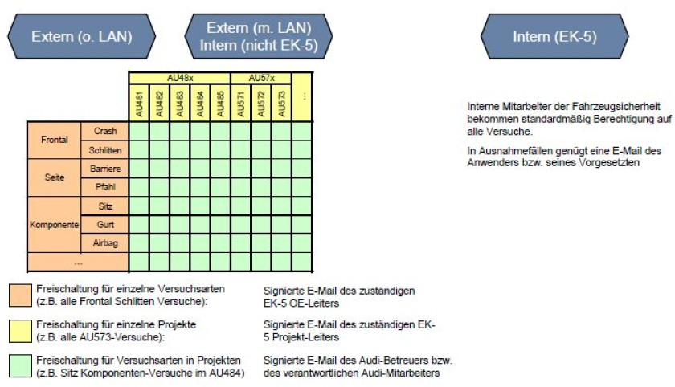
Nach der jeweiligen schriftlichen Bestätigung (wird über den VisVerdi-Zugangskoordinator initiiert) werden Sie auf das Projekt bzw. die Versuchsart freigeschaltet.
Als interner Mitarbeiter der Fahrzeugsicherheit sind Sie standardmäßig auf alle Versuche berechtigt.
[redacted-person] bei [redacted-co] vor Ort und somit innerhalb des [redacted-co] Netzes arbeiten, können Sie wie folgt auf VisVerdi zuzugreifen:
[redacted-person] einmalig auf Laufwerk S zum Installationsverzeichnis S:
\Software\[redacted-co]_VisVerdi\2000_Install\2100_Produktiv und führen Sie durch Doppelklick die Batchdatei vv_p.bat aus. Anschließend befindet sich die Anwendung auf [redacted-person] und kann gestartet werden. Alternativ können Sie auch direkt folgenden Link aufrufen, um VisVerdi zu starten:
\\audiintepro.in.audi.vwg\projectS\software\[redacted-co]_VisVerdi\2000_Install\2100_Produktiv\start_VisVerdi.lnk9 [redacted-person] der Anwendung geben [redacted-person] VisVerdi-Benutzernamen und [redacted-person] ein, welche Sie im Rahmen des Zulassungsprozesses erhalten haben.
[redacted-person], nachdem Sie einen der beiden oben genannten Schritt ausgeführt haben, dennoch keinen Zugriff auf VisVerdi haben, wenden Sie sich bitte an den VisVerdi-Zugangskoordinator:
E-Mail: [redacted-email]10
VisVerdi - [redacted-person] zum erfolgreichen Datenimporteur11
[redacted-person] einen WTS-Account beantragt, können Sie sich mit Ihrem NT-User am WTS anmelden – und zwar,
indem Sie folgende Web-Adresse aufrufen:
Hierzu muss ein [redacted-person] auf [redacted-person] installiert sein. Falls dieser nicht vorhanden ist, erhalten Sie hierzu eine Fehlermeldung, wenn Sie sich am WTS anmelden wollen. In diesem Fall wenden Sie sich bitte an [redacted-person], damit dieser einen [redacted-person] für Sie installiert.
file:////audiintepro.in.audi.vwg//projectS//software//[redacted-co]_VisVerdi//2000_Install//2100_Produktiv//start_VisVerdi.lnk
https://group-wiki.wob.vw.vwg/wikis/display/EFS/VisVerdi+-+Der+Weg+zum+erfolgreichen+Datenimporteur
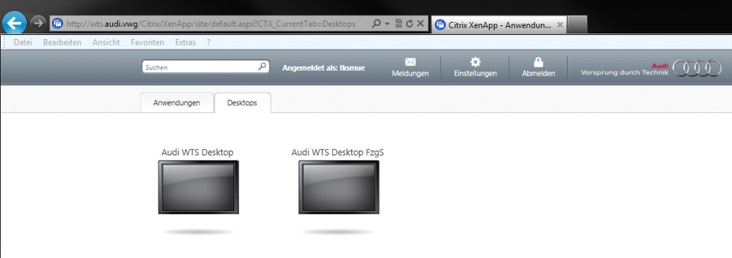
[redacted-person] anschließend auf der WTS-Oberfläche das Fahrzeugsicherheitsterminal ([redacted-co] WTS Desktops FzgS) aus, das Ihnen den Zugriff auf VisVerdi ermöglicht.
[redacted-person] der Anwendung geben [redacted-person] VisVerdi-Benutzernamen und [redacted-person] ein, welche Sie im Rahmen des Zulassungsprozesses erhalten haben.
Der WTS dient nicht dazu, um den vorgeschriebenen Prozess des Datentransfers zu umgehen. Es ist daher nicht zulässig, Daten von einem lokalen Rechner in die WTS-Ansicht zu übertragen.
[redacted-person] ein SFTP-Client-Programm auf [redacted-person]. Folgendes SFTP-Client-Programm wird von [redacted-co] empfohlen: WinSCP. Hierbei handelt es sich um ein [redacted-person] Programm, das Sie kostenfrei aus dem Web herunterladen können – z. [redacted-person]:
http://winscp.net/eng/download.php
[redacted-person] sich zudem mit Ihrem [redacted-co] Betreuer in Verbindung und beantragen Sie bei ihm einen lokalen SFTP-User, mit dem Sie sich am SFTP-Server anmelden können.
[redacted-person] anschließend bei der Anmeldung an WinSCP folgende Punkte (ggf. in Absprache mit dem [redacted-person] Firma):
[redacted-person] die IP-Adresse des SFTP-Servers in WinSCP ein (siehe Seite ).
[redacted-person] Port 22
[redacted-person] sich mit Ihrem lokalen SFTP-User an
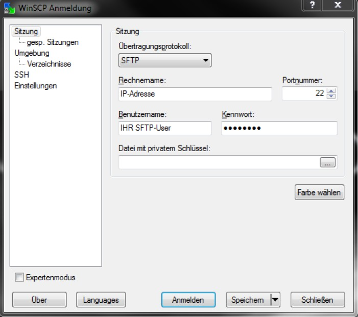
[redacted-person] einen NT-User besitzen, haben Sie als interner Mitarbeiter automatisch Zugang zu Falcon. Allerdings muss das System lokal auf [redacted-person] installiert werden. [redacted-person] finden Sie unter folgendem Pfad:
[redacted-person] noch nicht mit dem System Falcon vertraut sind, melden Sie sich zu einer Falcon-Schulung an. [redacted-person] sich dazu bitte an den Falcon-Systemverantwortlichen ([redacted-person] oder in [redacted-person] Redlich) unter [redacted-email]12.
Als Mitarbeiter eines externen Partners müssen [redacted-person] Falcon-Zugang zuerst beantragen.
[redacted-person] zu Falcon ist Rechner- und nicht Anwendergebunden. Um einen Zugang für [redacted-person] zu erhalten, kontaktieren Sie den Falcon-Systemverantwortlichen ([redacted-person] oder in [redacted-person] Redlich) unter [redacted-email]13 und beantragen Sie die [redacted-person] Rechners für das Falcon-System.
[redacted-person] sich an Falcon anmelden, ohne dass [redacted-person] für Falcon freigeschaltet ist, erhalten Sie folgende Fehlermeldung:
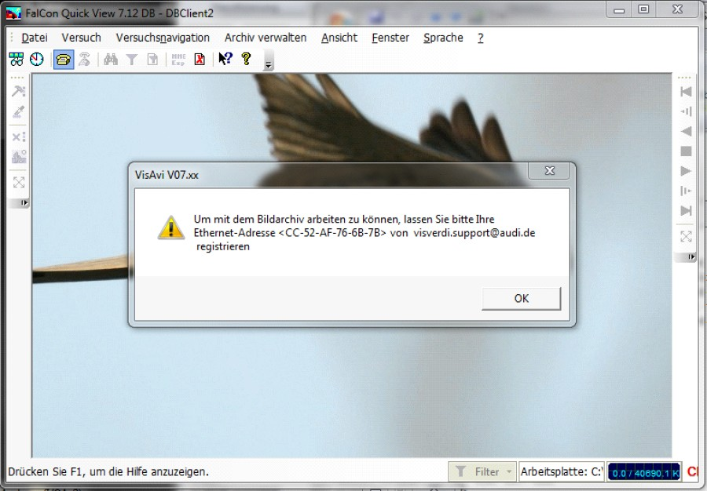
In diesem Fall senden Sie diese Fehlermeldung an den Falcon-Applikationsverantwortlichen unter [redacted-email]14. Sie enthält [redacted-person]-Adresse, die der Applikationsverantwortliche zur [redacted-person] Rechners für Falcon benötigt.
Um in Falcon auf Projekte zugreifen zu können, müssen Sie für diese Projekte auch in VisVerdi freigeschaltet sein. [redacted-person] also im Zuge der VisVerdi-Authentifizierung für ein bestimmtes Projekt/Versuchsart freigeschaltet, sind Sie dafür automatisch auch in Falcon freigeschaltet. Freischaltungen für weitere Projekte müssen separat in VisVerdi erfolgen.
Auszüge aus der ISOMME-Dokumentation finden Sie am Ende des Leitfadens als Anlage ab Seite .
[redacted-person] einer ISOMME-Verzeichnisstruktur ist verpflichtend und geschieht wie folgt: [redacted-person] einen Ordner an, der nach [redacted-person] benannt ist und der die Ordner Channel, Document, Movie, Photo und Static enthält:
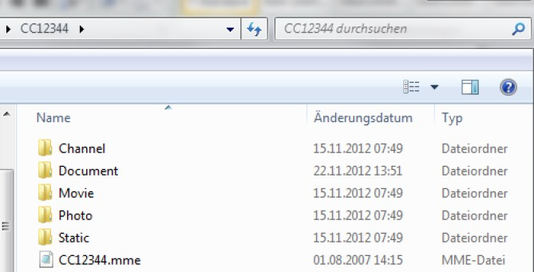
[redacted-person] der ISOMME-Struktur ist eine MME-Headerdatei. Diese muss ebenfalls nach der Versuchsnummer benannt sein (siehe Beispiel oben).
Für die Benennung von Datei- und Ordnernamen innerhalb der MME-Struktur sind Leerzeichen, Umlaute und Sonderzeichen nicht zulässig. Bitte beachten Sie darüber hinaus: ASCII-Dateien müssen am Ende jeder Zeile mit CRLF abgeschlossen werden (ASCII 13 + ASCII 10).
MME ist die Abkürzung für „[redacted]Tests, ISO TS 13499" und ermöglicht den multimedialen Austausch von Daten bei Fahrzeugsicherheitsversuchen. Im Datensatz der MME-Headerdatei können also Meta-Informationen sowohl zu Film- und Photo-Dateien als auch zu anderen Dokumenten enthalten sein. [redacted-person] für eine MME-Headerdatei sehen Sie hier:
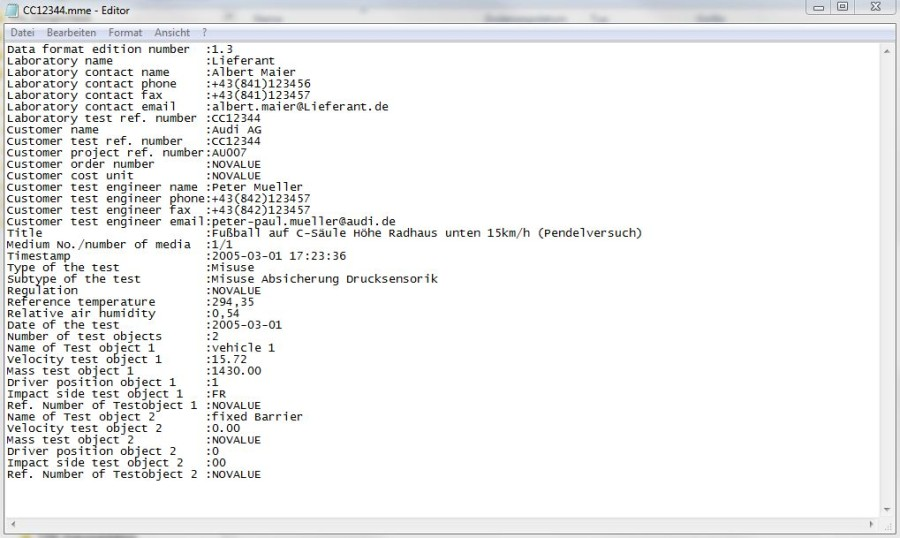
[redacted-person] Ihre MME-Headerdatei wie folgt:
[redacted-person] in VisVerdi den Menüpunkt Datei >> Export >> ISOMME-Datei. Dadurch wird eine ISOMME-Datei erstellt, die Sie nun in Ihrem ISOMME-Verzeichnis speichern können.
[redacted-person] vor dem Erstellen der MME-Headerdatei in VisVerdi nicht alle Pflichtfelder ausgefüllt haben, bevor Sie die oben genannte Export-Funktion anwenden, müssen Sie diese nachträglich von Hand in die txt-Datei eintragen. [redacted-person] gelten folgende Felder:
Laboratory contact email
Customer test engineer email
Date of the test
Reference temperature (in Kelvin)
Relative air humidity
Velocity test object 1
Mass test object 1
Velocity test object 2
Mass test object 2
Bitte beachten Sie:
[redacted-person] werden nur akzeptiert, wenn statt eines konkreten Wertes NOVALUE eingetragen wurde (Pflichtfelder ausgenommen).
[redacted-person] aus VisVerdi ist die empfohlene Vorgehensweise zum Erstellen einer MME-Headerdatei und daher an dieser Stelle auch explizit beschrieben. [redacted-person] über das dafür notwendige Know-how, können [redacted-person] MME-Headerdatei auch händisch erstellen, wodurch jedoch zu den zuvor genannten Pflichtfeldern folgender hinzukommen:
Laboratory contact email
Customer engineer email
Type of the test
Subtype of the test
Velocity test object 1
Velocity test object 2
Alle weitere Kriterien und Kenntnisse zum händischen Erstellen einer MME-Headerdatei sind im Rahmen dieses Leitfadens nicht erfasst. Entscheidend ist letztlich, dass alle Angaben, die Ihre MME-Headerdatei enthält, beim Datentransfer mit den in VisVerdi hinterlegten Werten übereinstimmen, da dieser ansonsten abgebrochen wird.
[redacted-person] an die zu liefernden Daten, wie sie im Folgenden genannt werden, sind verbindliche Vorgaben, die Sie einhalten müssen.
[redacted-person] gelten für [redacted-person]-Daten:
Abtastzeit von -100 [redacted-person] 500 ms
Abtastfrequenz bis 10/20 kHz Standard, bis 100 kHz für Körperschallsensoren (unterschiedliche Abtastraten in einem Messfile sind möglich)
Es sind nur ädquidistante Zeitkanäle erlaubt. [redacted-person] und Kanallängen in einem Test sind möglich.
CAN-Bus-Messdaten werden im Ordner „Dokumente" abgelegt und wie folgt benannt:
„Versuchsnummer_CAN.zip" => Beispiel: CC12344_CAN.zip
Daten von zuliefererbezogenen Steuergeräten, z. B.: Spiderbox-Bosch oder TEDR-Continental werden im Ordner „Dokumente" abgelegt und wie folgt benannt: „Verssuchnummer_spider.zip" oder bei TEDR- Conti „Versuchsnummer_ECU.zip" => Beispiel: CC12344_spider.zip oder CC12344_ECU.zip
ECU – Daten, Werte oder sonstige Dateien werden im Ordner „Dokumente" abgelegt mit
„Versuchsnummer_ECU.zip" => Beispiel: CC12344_ECU.zip
Messdatendaten für Hochvoltfahrzeuge, z. [redacted-person] oder Messprotokolle werden ebenfalls im
Ordner „Dokumente" mit Versuchsnummer_HV.zip abgelegt => Beispiel: CC12344_HV.zip
Units sind grundsätzlich in SI-Einheiten anzugeben. [redacted-person] hierzu bitte auch folgende Tabelle:
| MME_PHYSICAL_DIM ENSIONS | |||
|---|---|---|---|
| PHYSICAL_DIMENSIO N | TEXT_L1 | TEXT_L2 | DEFAULT_UNIT |
| DC | Distance | Abstand | m |
|---|---|---|---|
| DS | Displacement | Verschiebung | m |
| AD | [redacted-co]tory [redacted-person] (ADU) | ADU | dB |
| YV | [redacted-person] | Drehgeschwindigkeit | rad/s |
| PV | [redacted-person] | Neigungsgeschwindigkeit | rad/s |
| RV | [redacted-person] | Kippgeschwindigkeit | rad/s |
| YA | [redacted-person] | Drehwinkel | rad |
| PA | [redacted-person] | Neigungswinkel | rad |
| RA | [redacted-person] | Kippwinkel | rad |
| ?? | Undefined | Undefiniert | 1 |
| 00 | Others | Andere | 0 |
| 1? | [redacted] | [redacted] | ? |
| 2? | [redacted] | [redacted] | ? |
| AA | [redacted-person] | Winkelbeschleunigung | rad/(s*s) |
| AC | Acceleration | Beschleunigung | m/(s*s) |
| AN | Angle | Winkel | rad |
| AV | [redacted-person] | Winkelgeschwindigkeit | rad/s |
| CH | Charge | Ladung | C |
| CU | Current | [redacted-person] | A |
|---|---|---|---|
| DB | Decibel | Schalldruck | dB |
| DV | Displacement, integrated from Velocity | Verschiebung, Integriert aus Geschwindigkeit | m |
| EN | Energy | Energie | J |
| EV | Event | Ereignis | 1 |
| FO | Force | Kraft | N |
| FR | Frequency | Frequenz | 1/s |
| HU | Humidity | Feuchtigkeit | % |
| IL | Illuminance | Beleuchtungsstärke | lx |
| IM | Impulse | Impuls | kg*m/s |
| LE | [redacted-person] | Hebelarm | m |
| LF | luminous flux | Lichtstrom | lm |
| LI | [redacted-person] | Lichtstärke | cd |
| LU | Luminance | Beleuchtungsstärke | cd/(m*m) |
| MA | Mass | Masse | kg |
| MO | Moment | Moment | Nm |
| PO | Power | Energie | W |
| PR | Pressure | Druck | Pa |
| RE | Resistance | Widerstand | V/A |
| SA | Solid angle (steradiant) | Raumwinkel | sr |
|---|---|---|---|
| SE | Sensitivity | Empfindlichkeit | (Unit) / (Unit) |
| SP | [redacted](SPL) | Spitzenlautstärke | dB |
| ST | Strain | Belastung | m/m |
| TE | Temperature | Temperatur | K |
| TI | Time | Zeit | s |
| VA | Velocity, Integr. from Acc. | Geschwindigkeit, integriert aus Beschleunigung | m/s |
| VD | Velocity, Diff. from Displ. | Geschwindigkeit, differenziert aus Strecke | m/s |
| VE | Velocity | Geschwindigkeit | m/s |
| VO | Voltage | [redacted-person] | V |
| VU | Volume | Volumen | m*m*m |
[redacted]Daten im Ordner Channel ab. [redacted-person] sind darüber hinaus nicht erlaubt. [redacted-person] dabei die einzelnen Dateien wie folgt: Versuchsnummer.Kanalnummer
[redacted-person] – es darf lediglich der Antialiasingfilter bzw. die Offsetkorrektur angewandt werden.
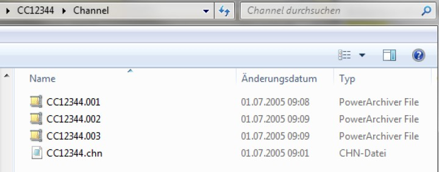
Bei diesem Beispiel mit der fiktiven Versuchsnummer CC12344 würde die korrekte Bezeichnung des ersten Channels also wie folgt lauten: CC[redacted-phone]
Eine vollständige Liste ist in ISOMMECheck.mdb in der [redacted-person] erhältlich.
[redacted-person] Channel muss eine zusätzliche CHN-Headerdatei enthalten, die die einzelnen Kanäle genau beschreibt. Dies geschieht anhand 16-stelliger Channelcodes:
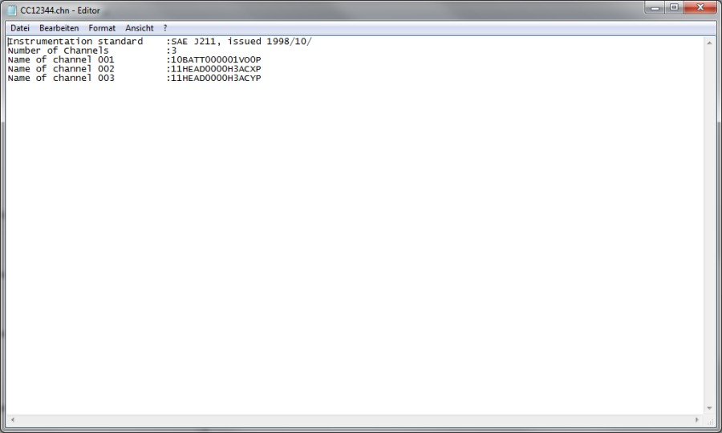
In diesem Beispiel lautet der Channelcode für Channel 001 wie folgt: 10BATT000001VO0P
Dabei dürfen Sie ausschließlich Channelcodes verwenden, die Ihnen von [redacted-co] vorgegeben werden. [redacted-person] akzeptiert werden, sind im Wesentlichen in VisVerdi im Bereich „Messauftrag" ersichtlich, wie dieses Beispiel zeigt:
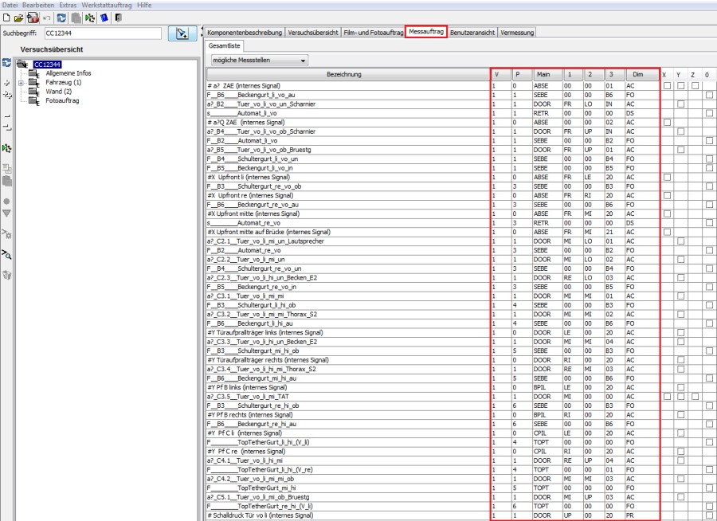
Channelcodes können Sie wie folgt interpretieren:
| Stelle | gibt Auskunft über |
|---|---|
| 1 | Versuchsobjekt |
| 2 | Positions |
| 3, 4, 5, 6 | Transducer, [redacted-person] |
| 7, 8 | [redacted-person] 1 |
| 9, 10 | [redacted-person] 2 |
| 11, 12 | [redacted-person] 3 |
| 13, 14 | [redacted-person] |
| 15 | Directions |
|---|---|
| 16 | [redacted-person] |
[redacted-person] zu den einzelnen Stellen erhalten Sie in der Datei ISO_MME_Code.mdb, die Sie im Rahmen des Erwerbs der ausführlichen ISOMME-Dokumentation bei iso.org erhalten. Siehe hierzu auch
Seite . Darüber hinaus ist die Datei auch Bestandteil von ISOMME-Check. [redacted-person] hierzu finden Sie auf Seite .
[redacted-person] an die zu liefernden Daten, wie sie im Folgenden genannt werden, sind verbindliche Vorgaben, die Sie einhalten müssen.
Dateien, die Sie im Ordner Document ablegen, benennen Sie wie folgt: Versuchsnummer_Firmenname_Dateibeschreibung.Dateiendung
Hier einige Beispiele zu Channel-Daten, die im Ordner Document abgelegt werden ([redacted-person] CC12344 ist beispielhaft und nicht relevant für [redacted-person]):
Beispiel CAN-Bus-Messdaten: „CC12344_Musterfirma_CAN.zip"
Daten von zuliefererbezogenen Steuergeräten, z. B.: Spiderbox-Bosch oder TEDR-Continental:
„CC12344_Musterfirma_spider.zip" oder bei TEDR-Conti „CC12344_Musterfirma_ECU.zip"
ECU – Daten, Werte oder sonstige Dateien: „CC12344_Musterfirma_ECU.zip"
Messdatendaten für Hochvoltfahrzeuge, z. [redacted-person] oder Messprotokolle:
„CC12344_Musterfirma_HV.zip"
Bitte beachten Sie darüber hinaus, dass dieser Ordner nicht zur Ablage von Daten dient, die Sie ohne Aufbereitung nach ISOMME-Norm übertragen wollen.
[redacted-person] Document muss eine attribute-Datei enthalten. [redacted-person] einer attribute-Datei handelt es sich um einen [redacted-co] spezifischen Prozessschritt, der über den ISOMME-Standard hinausgeht. Die attribute-Datei enthält diejenigen Attribute und deren Werte, die Sie in VisVerdi automatisiert eintragen möchten. [redacted-person] für eine attribute-Datei erhalten Sie über die Export-Funktion in VisVerdi. [redacted-person] dafür in VisVerdi den gewünschten Versuch und wählen Sie den Menüpunkt Datei >> Export >> .attribute-Datei aus. Dadurch können Sie eine attribute-Datei mit den in VisVerdi bereits hinterlegten Werten erstellen, z. B.:
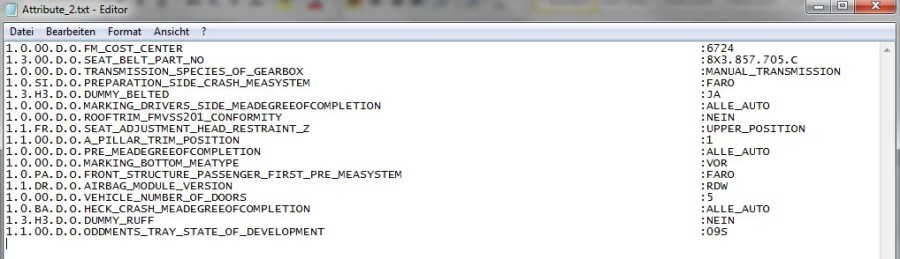
Um eine zum Datenimport geeignete attribute-Datei zu erstellen, müssen Sie diese händisch anlegen. Die dafür notwendigen Informationen erhalten Sie wie folgt: [redacted-person] in VisVerdi alle relevanten Komponenten aus und übertragen Sie deren Isocode (Klick auf rechte Maustaste => angezeigten Isocode in Zwischenablage kopieren => einfügen) in eine Text-Datei:
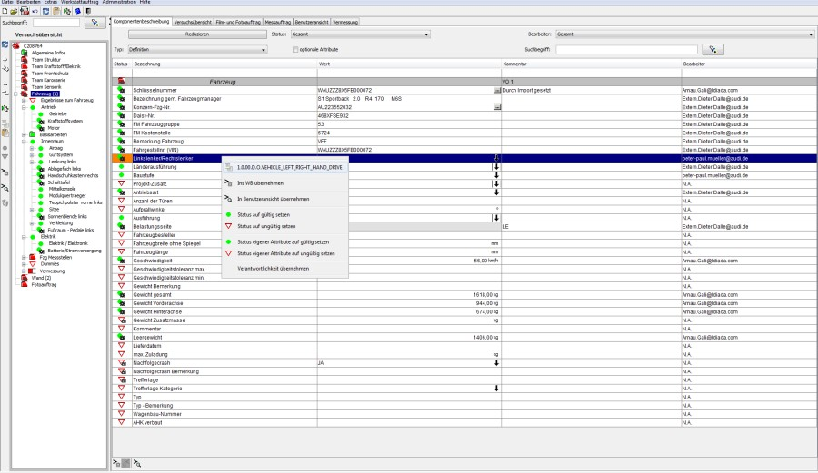
Ausschnitt aus VisVerdi
Dadurch erhalten Sie eine attribute-Datei (also solche abspeichern!) mit den Komponenten aus VisVerdi, denen nun noch die entsprechenden Werte zugeordnet werden müssen. Wichtig in diesem Zusammenhang: Es ist nicht korrekt, die Werte mit den in VisVerdi verwendeten Begrifflichkeiten zu übertragen, da es sich hier um eine Systemschnittstelle handelt. Daher muss für die attribute-Datei die korrekte Systemsprache verwendet werden. Sprich: Es ist nicht korrekt, für die Bezeichnung „Rechtlenker/Linkslenker" die in VisVerdi verwendeten Kürzel „RL" bzw. „LL" zu übernehmen. Vielmehr lauten die korrekten Werte in der entsprechenden Systemsprache „1" bzw. „3".
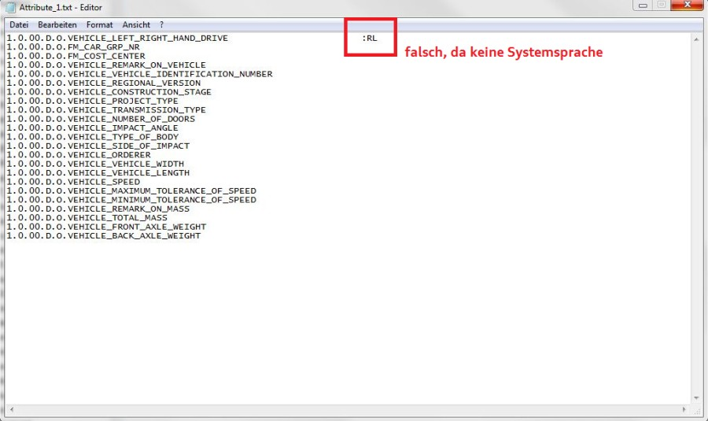
Um an die jeweiligen Werte in Systemsprache zu gelangen, führen Sie mit der bis dato vorhandenen attribute- Datei einen ISOMME-Check durch (siehe Seite ). Die sich daraus ergebende Log-Datei zeigt Ihnen dann nicht nur den falsch übertragenen Wert, sondern auch all diejenigen Systemwerte an, die für die jeweilige [redacted-person] möglich sind (in diesem Fall „3" für „RL" und „1" für „LL"):
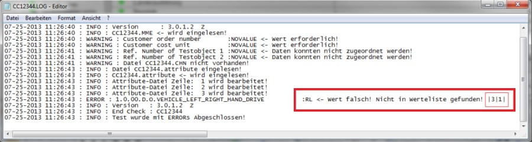
[redacted-person] über das entsprechende Know-how, können Sie die jeweiligen Systemwerte auch aus ISOMMECheck.mdb unter Attribute-Wertelisten herauslesen:
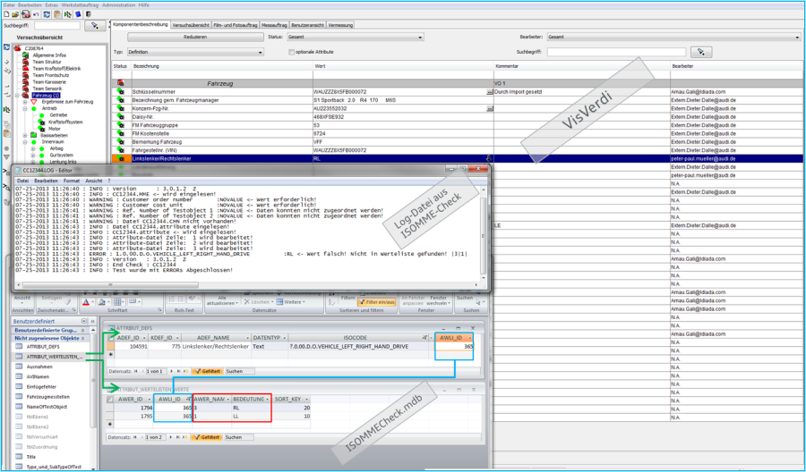
[redacted-person] an die zu liefernden Daten, wie sie im Folgenden genannt werden, sind verbindliche Vorgaben, die Sie einhalten müssen.
[redacted-person] für Ausschnitt 1.000 fps mind. 1.280 x 1.024
[redacted-person] für Totale (Crash) 1.000 fps mind. 1.504 x 1.024 Pixel, Optional 1.920 x 1.080 (Full- HD) Shuttertime < 500 µs
Default für Onboard 1.000 fps mind. 1.280 x 1.024 Pixel, kleinere Auflösung nur nach Freigabe durch
Auftraggeber!
[redacted-person] 2.000 fps mind. 1.280 x 1.024 Pixel, Belichtung möglichst < 100 µs; Optional 10.000 bis 20.000 fps mit 1.024 x 768 bzw. 768 x 576 Pixel
Keine interpolierte Auflösungen
[redacted]müssen synchron zueinander betrieben werden
[redacted-person] Kameras müssen synchron zueinander betrieben werden
Offset T0 zu Bild 1 muss ermittelt und dokumentiert werden
[redacted-person] (auch abgetastet; z.B. 16mm Film) ist nicht zulässig
[redacted-person].-Time bei Crash, Schlitten (sofern nicht anders gefordert ) -20 [redacted-person] 300 ms
[redacted-person].-Time bei Airbag (sofern nicht anders gefordert ) 0 – 150 ms
Rec.-Time sonstiger Komponentenversuche nach Anforderung
Headereinträge auf korrekte FalCon-Wiedergabe prüfen bzw. anpassen (z.[redacted-person] „Modisara") sowie
*.mii Datei korrekt befüllen!
Alle AVI's mit X264-Codec (Version und Einstellung wie von AK-Bildtechnik empfohlen)
Einblendung der [redacted-co] Versuchsnummer in Video links oben, Zeit (ms) rechts oben - ggf. mit Nachkommstelle - angepasst an Abtastrate. Abweichung von Position nur zulässig wenn eine Verdeckung wichtiger Bildinhalte zu erwarten ist. Größe ist Relativ zu Kameraauflösung anzupassen; Richtwert, [redacted-person] ca. 4-5 % der vertikalen Auflösung. Es ist ein schwarzer Hintergrund mit weißer- oder silberfarbener Schrift zu wählen, Einblendung muss über vollständige Länge des Video sichtbar sein.
Default mind. 1.280 x 720 progressiv bei 25 fps
Default mind. 640 x 480 progressiv > 25 bis 150 fps
Codec X264 wie Highspeed; außer Versuchsdoku > 1 min./Film ([redacted-person] auf 26, min. GOP size 50, max. GOP size 100)
Headereinträge auf korrekte FalCon-Wiedergabe prüfen bzw. anpassen (z.[redacted-person] „Modisara") sowie
Zwingend *.mii korrekt erstellen (time zero + frame rate)
Einblendung der [redacted-co] Versuchsnummer in Video links oben, Zeit in Sekunden mit mind. zwei Nachkommastellen, rechts oben. Abweichung von Position nur zulässig wenn eine Verdeckung wichtiger Bildinhalte zu erwarten ist. Größe ist Relativ zu Kameraauflösung anzupassen; Richtwert, [redacted-person] ca. 4-5 % der vertikalen Auflösung. Es ist ein schwarzer Hintergrund mit weißer- oder silberfarbener Schrift zu wählen, Einblendung muss über vollständige Länge des Video sichtbar sein.
Kameras müssen synchron zueinander betrieben werden
Synchronisierter t0 mit Messtechnik
ALLE zulässigen und möglichen Kameraansichten sind innerhalb des VW-Konzern abgestimmt und harmonisiert.
Wie welche Ansicht zu benennen ist ist dem Versuchsauftrag zu entnehmen (ggf. auch aus Katalog den Auftraggeber zur Verfügung stellen kann). [redacted-person] macht Zusammensetzung der Ansichtsnamen transparent; eigenen Benennungen - auch im Rahmen der Beschreibung erstellte - sind nicht zulässig und können nicht verwendet werden. Sofern eine häufig genutzte Ansicht nicht abgebildet ist kann über [redacted-person] auf Definition eines zusätzlichen Namen gestellt werden.
Informationen zu aktuell gültigen Standard-Positionsnamen finden Sie als Anlage ab Seite .
Es dürfen nur von [redacted-co] zur Verfügung gestellte Positionsnamen verwendet werden. Sollte keiner der aufgelisteten [redacted-person] Position entsprechen, wählen Sie ggf. denjenigen Namen, der [redacted-person] am nächsten kommt oder die Funktion „Sonderposition".
Der jeweiligen Positionsname ist auch in VisVerdi unter >> Film- und Fotoauftrag >> stationäre Kamera >> Position ersichtlich. [redacted-person], der dies verdeutlicht, finden Sie als Anlage ab Seite .
Um Ihre AVIs ISOMME-konform im Ordner Movie abzulegen, benennen Sie sie wie folgt: Versuchsnummer_Positionsname. [redacted-person] und Positionsname steht also immer ein "Underline" _ (ASCII-Zeichen 95) .
=> Beispiel: CC12344_T6CAM0MI_13HEAD00.AVI
Kalibrierdateien für die filmmesstechnisch auszuwertenden Kameras sind im ISOMME-Format (*.cor) zu liefern. Zudem müssen Sie zu Ihren AVIs eine MII-Headerdatei mitliefern, die die Metadaten zu den im Ordner Movie enthaltenen Filmen enthält.
[redacted-person] werden an Ihre MMI-Headerdatei gestellt:
| MII-Einträge | ||
|---|---|---|
| Number of movies | :3 | MUSS |
| Comments | :by ImagerControl (FalCon eXtra [redacted-phone]) | SOLL |
| ID-number 1 | :1 | MUSS |
| Origin 1 | :SA1706600 | MUSS |
| Description 1 | :AUSSCHNITT VORNE RECHTS FRONTDUMMY, SV | SOLL |
| Camera ID-number 1 | :1086 | MUSS |
| Camera type 1 | :Memrecam GX-1 NAC [redacted-person]. | MUSS |
| Lens ID-number 1 | :Nikon15 | KANN |
| Lens type 1 | :F-Mount | KANN |
| Focus 1 | :NOVALUE | KANN |
| Lens focal length1 | :50.000000 | SOLL |
| Number of images 1 | :601 | MUSS |
| Film speed 1 | :[redacted-phone] | MUSS |
| Shutter time 1 | :0.000003 | MUSS |
| Aperture 1 | :5.6 | SOLL |
| Time zero 1 | :0 | MUSS |
| Time vector file name 1 | :NO | KANN |
| Reference system 1 | :NOVALUE | KANN |
|---|---|---|
| Location X 1 | :NOVALUE | KANN |
| Location Y 1 | :NOVALUE | KANN |
| Location Z 1 | :NOVALUE | KANN |
| Theta X 1 | :NOVALUE | KANN |
| Theta Y 1 | :NOVALUE | KANN |
| Theta Z 1 | :NOVALUE | KANN |
| Width of image 1 | :768 | MUSS |
| Height of image 1 | :512 | MUSS |
| Aspect ratio of pixels 1 | :1.000000 | MUSS |
| Colour 1 | :RGB | MUSS |
| Name of movie file 1 | :C: \ImagerControlData\SA1706600\ Movie\SA1706600-1F-M30- MFF.AVI |
MUSS |
| Format of movie file 1 | :AVI | MUSS |
| Keyframes 1 | :1 | MUSS |
| Codec used 1 | :x264vfw - H.264/MPEG-4 AVC codec |
MUSS |
| Compression 1 | :100 % | MUSS |
| Distortion index 1 | :NOVALUE | KANN |
| Movie images corrected 1 | :NO | SOLL |
| Correction parameter file 1 | :NOVALUE | KANN |
|---|---|---|
| Image history filename 1 | :SA1706600-1F-M30-MFF.imh | MUSS |
| .Movie offset 1 | :0 | MUSS |
| ID-number 2 | :2 | |
| Origin 2 | :SA1706600 | |
| … | ||
| … |
Grundsätzlich gilt: [redacted-person] müssen vollständig sein. [redacted-person] behält sich dabei vor, eine „Kann"- oder „Soll"-Anforderung ggf. zu einer verpflichtenden „Muss"-Anforderung zu erweitern.
Immer vorausgesetzt, dass Ihre AVI-Dateien korrekt erstellt wurden, können Sie zum Erstellen einer MII- Headerdatei das Tool ISOMME-Check nutzen (Hinweis: [redacted-person] noch nicht über ISOMME-Check verfügen, erhalten Sie hierzu ab Seite weitere Informationen):
[redacted-person] in ISOMME-Check den Menüpunkt Optionen >> Tools >> MII-Datei erstellen aus.
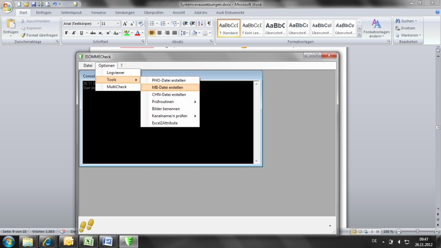
[redacted-person] anschließend aus dem Verzeichnis denjenigen Ordner, in dem Ihre AVI-Dateien abgelegt sind.
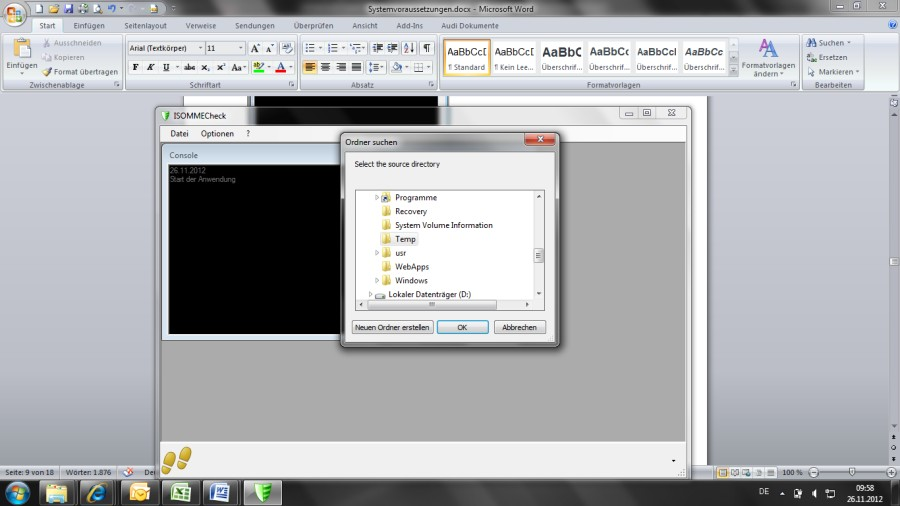
[redacted-person] auf „OK" und geben Sie anschließend [redacted-person] ein.
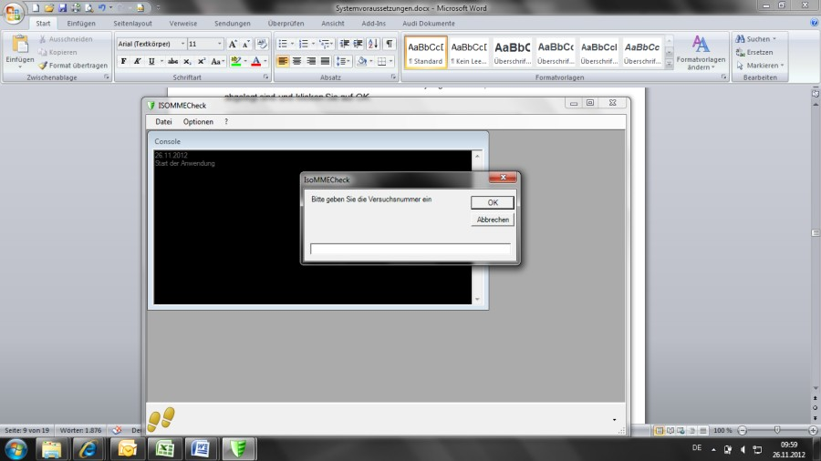
[redacted]korrekt eingegeben haben, klicken Sie auf OK.
Sie erhalten nun eine Bestätigung, dass Ihre MII-Datei erfolgreich erstellt wurde. [redacted-person] auf „OK".
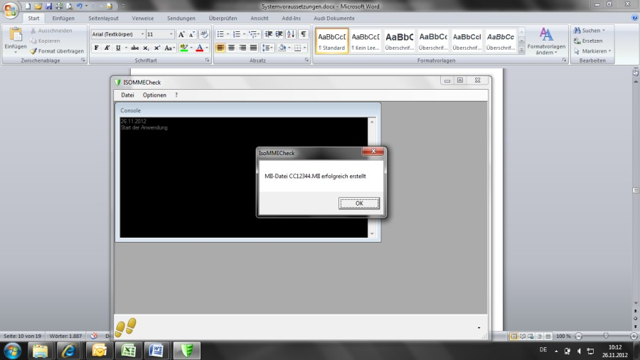
Die MII-Datei befindet sich nun in dem von Ihnen gewählten Ordner. [redacted-person], dass die Datei letztlich im Ordner Movie vorliegen muss.
Sollten einige der unter Punkt e genannten Informationen noch nicht in Ihre MMI-Headerdatei eingetragen sein, tragen Sie sie händisch mit Hilfe des txt-Editors nach.
[redacted-person] gelten für [redacted-person]-Daten:
Auflösung: max. 6 Megapixel für Detail bzw. 10 MP für „Gesamt" sollten nicht überschritten werden.
Ausschließlich JPEG-Format (Norm ISO/IEC 10918-1 bzw. CCIT T.81), mittlere Kompression = ca. 1 MB bei 6 MPix bzw. ca. 1,4 MB bei 10 MPix (Verlustbehaftung wird akzeptiert)
Um [redacted-person]-Dateien ISOMME-konform im Ordner Photo abzulegen, können Sie das Tool ISOMME-Check nutzen – immer vorausgesetzt, Sie haben die jpg-Dateien korrekt erstellt (Hinweis: [redacted-person] noch nicht über ISOMME-Check verfügen, erhalten Sie hierzu ab Seite weitere Informationen).
[redacted-person] in ISOMME-Check den Vorgang „BilderExport", indem Sie im Menüpunkt Optionen >> Tools >> Bilder benennen auswählen.
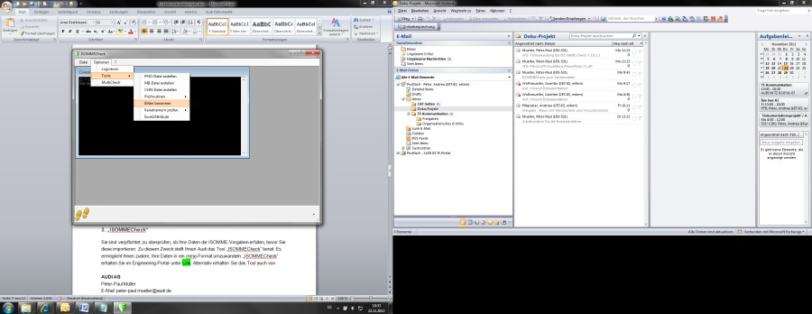
Hinweis: [redacted-person] an dieser Stelle eine Fehlermeldung erhalten, benötigen Sie ein [redacted]Pack. Dieses ist kostenlos als Download im Web erhältlich unter:
http://msdn.microsoft.com/en-us/vstudio/bb735936.aspx
Nach der Installation des [redacted]Packs starten Sie ISOMME-Check neu und wählen Sie erneut im Menüpunkt Optionen >> Tools >> Bilder benennen aus.
Schritt: [redacted-person] eine Vorlage, indem Sie auf „Ausführen" klicken. Daraufhin öffnet sich folgende
Eingabemaske:
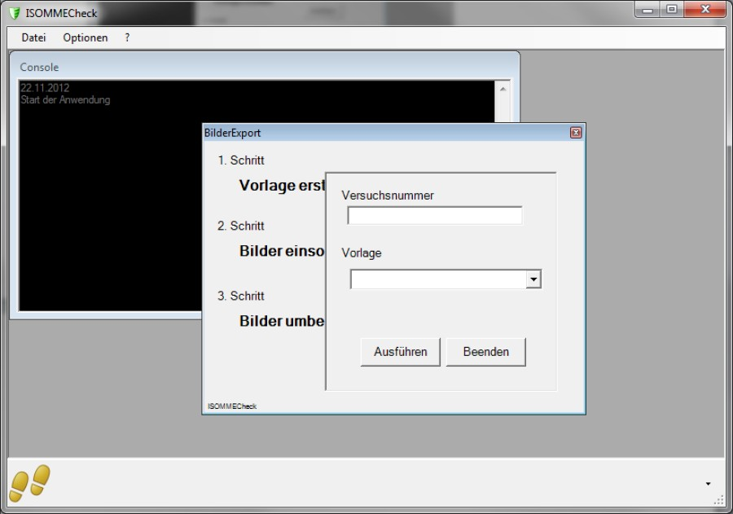
[redacted]ein und wählen Sie aus der Vorlage, um welche Versuchsart es sich handelt. Sind alle Angaben korrekt eingetragen, klicken Sie auf „Ausführen". Sie erhalten daraufhin eine Bestätigung, dass [redacted-person] korrekt erstellt wurde:
[redacted-person] auf „OK" und öffnen Sie in [redacted-person] C:_Bilder den Ordner, der nach der von Ihnen genannten Versuchsnummer benannt wurde (Hinweis: Die hier angegebenen Versuchsnummer „CC12344" ist ein Beispiel und nicht relevant für [redacted-person]).
Schritt: Was zeigen [redacted-person]? Verschieben bzw. kopieren Sie die Bilder ihrem Motiv entsprechend in die jeweils dafür vorgesehenen Unterordner der Ordnerstruktur. Beispiel: [redacted-person], das den Versuchsaufbau vor einem Crashversuch zeigt, verschieben bzw. kopieren Sie in den Unterordner VORHER
>> VERSUCHSAUFBAU. Sie müssen [redacted-person] dabei nicht von Hand umbenennen. Dies erfolgt automatisch in Schritt 3.
Schritt 3: Sind alle Versuchsbilder korrekt abgelegt, benennen Sie die Bilder um, indem Sie auf „Ausführen"
klicken. Daraufhin erscheint erneut eine Eingabemaske.
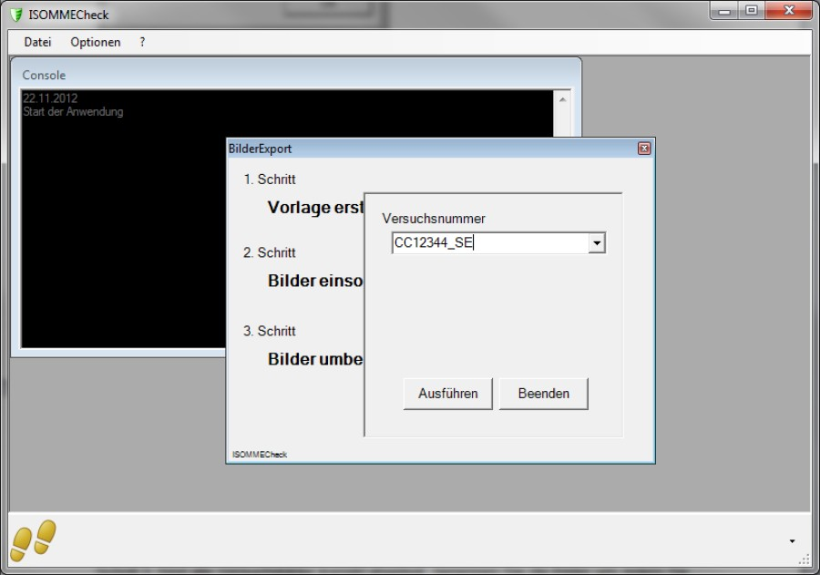
[redacted]und klicken Sie auch hier auf „Ausführen". Sie erhalten nun eine
Bestätigung, dass [redacted-person] erfolgreich erstellt wurde:
[redacted-person] auf „OK" und beenden Sie abschließend den Vorgang „BilderExport", indem Sie auf „Beenden"
klicken.
Nun befindet sich im Verzeichnis C:_Bilder unter dem Ordner mit [redacted-person] der Ordner Photo, in dem [redacted-person] ISOMME-konform benannt und abgelegt wurden.
[redacted]nicht mit Hilfe von ISOMME-Check in die Verzeichnisstruktur einpflegen, beachten Sie bitte, dass das Ablegen von Dateien nur am Ende aller Ordnerstrukturen zulässig ist.
Oftmals erstellt der Explorer im Hintergrund unsichtbare Thumb-Dateien. Diese sind jedoch im ISOMME- Zusammenhang verboten. [redacted]daher so ein, dass keine Thumb-Dateien generiert werden. [redacted-person], wie dies funktioniert, erhalten Sie als Anlage ab Seite . Bitte beachten Sie: Um die in der Anleitung beschriebene Einstellung vornehmen zu können, benötigen [redacted-person]-Administrationsrechte.
Zu [redacted-person]-Daten müssen Sie eine PHO-Headerdatei mitliefern, die alle relevanten Informationen zu den Versuchsbildern noch einmal zusammenfasst. [redacted]Dateien mit ISOMME-Check benannt, wurde diese Headerdatei automatisch im Ordner Photo erstellt. [redacted-person] jedoch ggg. fehlende Angaben händisch mit Hilfe des txt-Editors. [redacted-person] im Speziellen gefordert werden, sehen Sie hier:
| Photo-Einträge |
|---|
| Number of photos | :28 |
|
|---|---|---|
| ID-number 1 | :1 |
|
| Test object number 1 | :NOVALUE |
|
| Camera type 1 | :NOVALUE |
|
| Post-test / Pre-test 1 | :POST |
|
| Description 1 | :NOVALUE |
|
| Direction 1 | :NOVALUE |
|
| Aperture 1 | :NOVALUE |
|
| Exposure time 1 | :NOVALUE |
|
| Width of image 1 | :1280 |
|
| Height of image 1 | :960 |
|
| Aspect ratio of pixels 1 | :NOVALUE |
|
| Colour 1 | :RGB |
|
| Name of photo file 1 | :A-CC14534_00001.JPG |
|
| Format of photo file 1 | :jpg |
|
| Compression 1 | :NOVALUE |
|
| ID-number 2 | :2 | |
| Test object number 2 | :NOVALUE | |
| Camera type 2 | :NOVALUE |
| Post-test / Pre-test 2 | :POST |
|---|---|
| Description 2 | :NOVALUE |
| Direction 2 | :NOVALUE |
| Aperture 2 | :NOVALUE |
| Exposure time 2 | :NOVALUE |
| Width of image 2 | :1280 |
| Height of image 2 | :960 |
| Aspect ratio of pixels 2 | :NOVALUE |
| Colour 2 | :NOVALUE |
| Name of photo file 2 | :A-CC14534_00002.JPG |
| … |
[redacted-person] an die zu liefernden Daten, wie sie im Folgenden genannt werden, sind verbindliche Vorgaben, die Sie einhalten müssen.
Für den Fall, dass Sie die 3D-Filmauswertung selbst vornehmen, müssen Sie innerhalb des Ordners Static zu
folgenden Positionen …
| Position | Links | Rechts |
|---|---|---|
| A-Säule oben | 11APILUP […] | 13APILUP […] |
| Kotflügel hinten | 17FENDMI […] | 19FENDMI […] |
|---|---|---|
| Schweller vorne | 14SILBFR […] | 16SILBFR […] |
| [redacted-person] | 14SILBMI […] | 16SILBMI […] |
| Schweller hinten | 14SILBRE […] | 16SILBRE […] |
| Dach vorne | 12ROFRLE […] | 12ROFRRI […] |
| Dach hinten | 18ROFRLE […] | 18ROFRRI […] |
… folgende Kanäle liefern:
Geschwindigkeiten
Beschleunigungen
in x-, y-, und z-Richtung
[redacted-person] dabei die korrekten Kanalbezeichnungen, so wie sie in der mittleren und rechten Spalte der Tabelle angegeben sind. [redacted-person] Videokanäle mit der Endung V kenntlich.
Auch wenn Sie nicht selbst 3D auswerten und daher nicht die gewünschten Kanäle bzw. Static-Dateien liefern, müssen Sie dennoch folgende Daten bereitstellen und übertragen:
Movies und avi-Formate entsprechend der Anforderungen ab S.
Mindestens zwei Ansichten pro Fahrzeugseite, Filmmarker müssen in je zwei Filmen gleichzeitig zu sehen sein.
Kalibrierdaten der Kamera (Kamerakonstante, Bildhauptpunkt, Verzeichnung): idealerweise als CamFolder Datei (FalCon) oder als *.cal, *.cor oder *.txt Datei
Kamerapositionen ([redacted-person]): Passpunktübersicht mit Bezeichnung und Koordinaten. [redacted-person] während dem Versuch nicht zu sehen sind, muss die Aufnahme mitgeliefert werden, die eine Berechnung der äußeren Orientierung der Kameras zulässt.
Wie eine Static-Datei zum ISOMME-konform aufgebaut ist, sehen Sie hier:
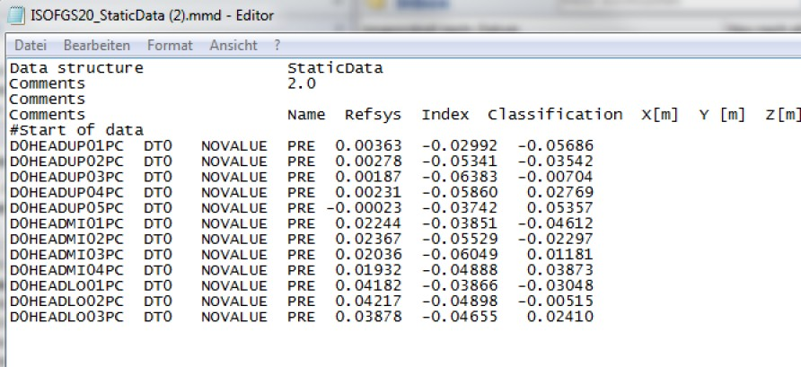
Zusätzlich sehen Sie hier den entsprechenden Ausschnitt aus der Dokumentation von iso.org:
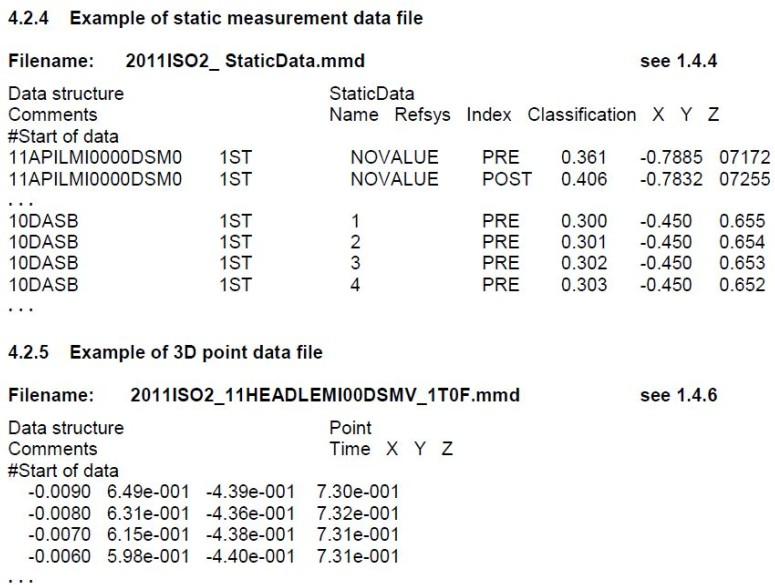
[redacted-person] der hier dargestellten Beispiele erhalten Sie als Anlage ab Seite .
[redacted-person] der Static-Datei darf keine Sonder- oder Leerzeichen enthalten.
Im [redacted]finden Sie ISOMME-Check als zip-Datei in der Version 3.0.1.1 vor. [redacted-person] diese auf [redacted-person], entpacken Sie sie und führen Sie anschließend ISOMME.exe aus („Doppelklick").
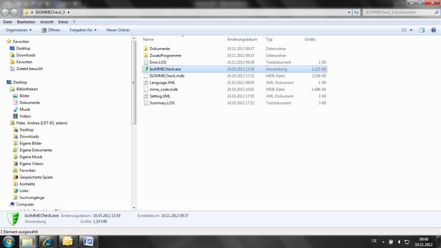
Sie erhalten nun den Hinweis „Software not registered".
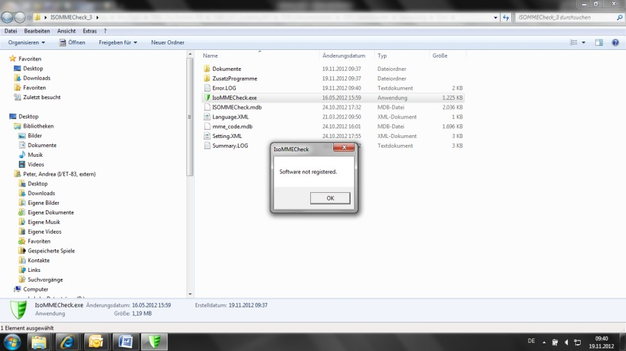
[redacted-person] auf „Ok". Danach erscheint eine Software-Registration-Eingabemaske, die einen E-Mail-Link und
eine [redacted-person] Nummer enthält.
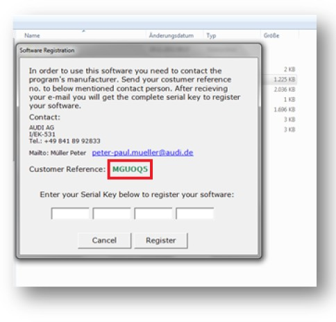
[redacted-person] auf den Link. Dadurch öffnet sich eine neue E-Mail mit dem Betreff „ISOMME-Check: Request for
a Serialnumber":
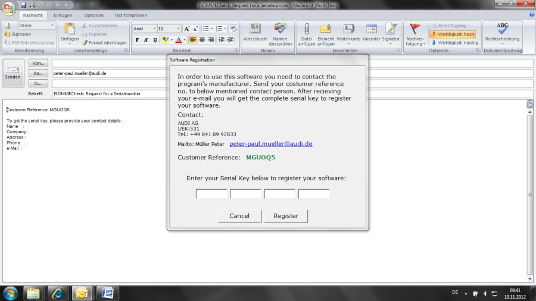
[redacted-person] die in der E-Mail verlangten Kontaktinformationen sowie die [redacted-person] Nummer an und senden Sie die E-Mail ab ([redacted-person] ist bereits automatisch angelegt. Falls nicht, verwenden Sie den Empfänger aus der Software-Registration-Eingabemaske).
Nach dem Absenden der E-Mail erhalten Sie den Hinweis „Software successfully registered. [redacted-person]".
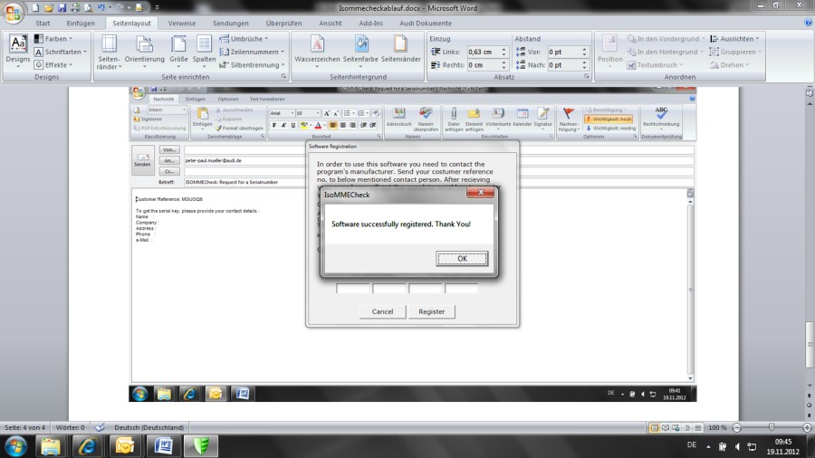
[redacted-person] auf „Ok". Im Anschluss daran erhalten Sie eine E-Mail mit [redacted-person] Key.
[redacted-person] nun ISOMME.exe noch einmal öffnen und in Folge zur Software-Registration-Eingabemaske gelangen, tragen [redacted]dort in die Eingabefelder ein.
[redacted-person] es, den [redacted-person] lediglich aus der E-Mail in die Eingabefelder zu kopieren, da Leerzeichen
i.d.[redacted-person] werden und somit den Key verfälschen. [redacted-person] den Key stattdessen Stelle für Stelle ein. [redacted-person] anschließend auf „Register". [redacted-person] den [redacted-person] korrekt eingegeben, startet nun ISOMME- Check:
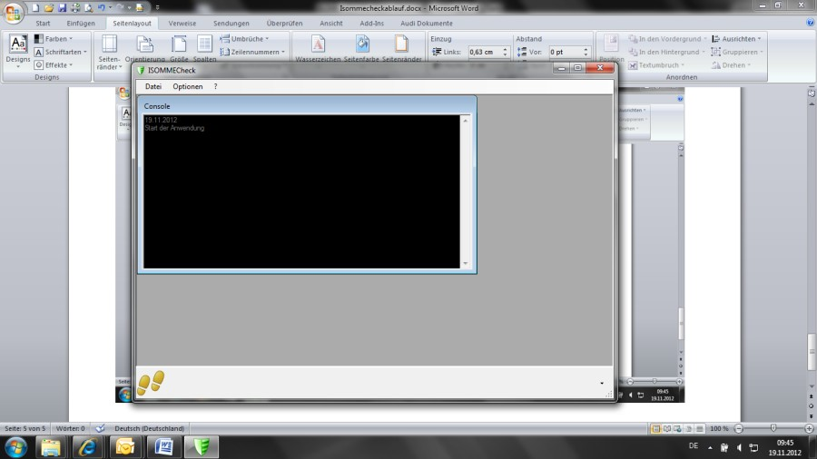
[redacted-person] und [redacted-person] Daten in Hinblick auf die Erfüllung der ISOMME-Norm ist verpflichtend. In welcher [redacted-person] dies bewerkstelligen, bleibt Ihnen überlassen. Daher ist die Verwendung von ISOMME- Check optional. [redacted-person] sich für das Tool entschieden haben, starten Sie die Datenüberprüfung mit ISOMME-Check, indem Sie im Menüpunkt Datei >> Laden auswählen.
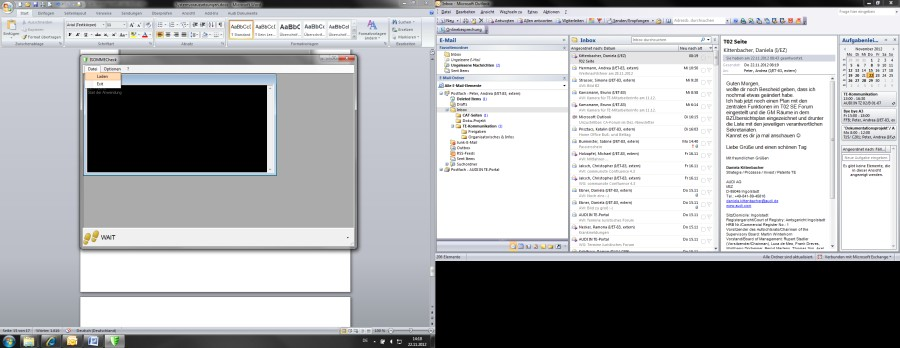
[redacted-person] nun die von Ihnen generierte mme-Datei in Ihrem ISOMME-Verzeichnis aus, und klicken Sie auf
„Öffnen". Daraufhin startet ISOMME-Check mit dem Überprüfen der Verzeichnisinhalte und erstellt gleichzeitig in [redacted-person] eine LOG-Datei, in der die Ergebnisse der Überprüfung dokumentiert werden. Diese LOG-Datei kann ebenfalls Bestandteil des ZIP-Files sein, das Sie an [redacted-co] übertragen.
[redacted-person] nun der LOG-Datei, ob alle [redacted-person] ISOMME-konform aufbereitet wurden und bessern Sie ggf. nach. Dies gilt auch für die .attribute-Datei, die im Rahmen von ISOMME-Check ebenfalls geprüft wird Hinweis:
xml-Dateien werden durch ISOMME-Check nicht geprüft.
Die LOG-Datei gibt Ihnen über die Statusmeldungen INFO Auskunft darüber, welches Attribut geprüft wurde. Darüber hinaus erfahren Sie über die Statusmeldungen ERROR bzw. FATAL, ob bzw. welcher fehlerhafte Wert für dieses Attribut vorliegt.
[redacted-person] die entsprechenden Werte in VisVerdi und erstellen Sie eine neue mme-Datei. Sind alle Korrekturen ausgeführt, führen Sie ISOMME-Check erneut durch. [redacted-person] gilt als erfolgreich abgeschlossen, wenn keine Statusmeldungen ERROR oder FATAL mehr erzeugt werden.
Die LOG-Datei gibt Ihnen über die Statusmeldungen ERROR bzw. FATAL Auskunft darüber, in welcher Zeile der attribute-[redacted-person] Korrekturen vornehmen müssen. Darüber hinaus erhalten [redacted-person], welche Werte korrekterweise eingesetzt werden müssen.
[redacted-person] die entsprechenden Werte in VisVerdi und erstellen Sie eine neue attribute-Datei. Sind alle Korrekturen ausgeführt, führen Sie ISOMME-Check erneut durch. [redacted-person] gilt als erfolgreich abgeschlossen, wenn keine Statusmeldungen ERROR oder FATAL mehr erzeugt werden.
Als interner Mitarbeiter können [redacted-person] Daten auf zwei verschiedene Wege übertragen:
Über das Bilderimport-Tool „Bildimport"
Über die Skripte auf den Prüfständen
[redacted]als Mitarbeiter eines externen Partners in einer ISOMME-konformen Verzeichnisstruktur übertragen, müssen Sie diese zu einem ZIP-File packen. [redacted-person] dabei, dass Sie das ZIP-File ausgehend
vom obersten Verzeichnis erstellen und nicht nur die Unterordner „zippen". [redacted-person] dieses ZIP-File anschließend wie folgt: Versuchsnummer_Firmenname.zip => Beispiel: CC12344_Musterfirma.zip Tipp:
[redacted-person] für diesen [redacted-person].
Um den Datentransfer vorzunehmen, melden Sie sich mit Ihrem lokalen SFTP-User am Datentransfer-Server an. Sie werden daraufhin mit dem SFTP-Datentransfer-Server verbunden und erhalten folgende Maske:
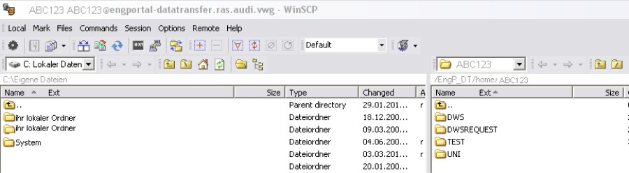
Auf der linken Seite sehen Sie die [redacted-person] lokalen Rechners. Auf der rechten Seite befindet sich die Verzeichnis-Struktur des Datentransfer-Servers. [redacted-person] nun Ihr ZIP-File zur [redacted-co], indem Sie es von Ihrem lokalen Speicherplatz in den Ordner DWS verschieben.
Es besteht ein direkter Zusammenhang zwischen dem Bearbeitungsstatus in VisVerdi und dem Datentransfer. Demnach lassen sich Daten nur für den Datentransfer einstellen, wenn als Bearbeitungsstatus
„durchgeführt" angegeben wurde. Im Anschluss an die Übertragung werden [redacted-person] in zwei Stufen durch
die [redacted-co] geprüft.
Sie sind verpflichtet, [redacted-person] vor der Übertragung zu prüfen. Dennoch kann die Übertragung fehlerhaft sein und/oder wird unter Umständen sogar abgebrochen. Dies kann entweder am Übertragungsprozess (Stufe 1) oder an der Datenqualität (Stufe 2) liegen. In beiden Fällen werden Sie über den Erfolg bzw. Misserfolg per E- Mail-Benachrichtigungen informiert. Nachfolgend sind Beispiele für alle möglichen E-Mail- Benachrichtigungen abgebildet. So können Sie genau abgleichen, welcher Status in [redacted-person] vorliegt (relevante Passagen sind farbig markiert):
In Stufe 1 wird der Uploader der Dateien über Erfolg bzw. Misserfolg des Uploads an sich informiert. [redacted-person] bezieht sich ausschließlich auf den Übertragungsprozess selbst und enthält keinerlei Aussage über die Qualität der Daten.
Hat die Übertragung fehlerfrei stattgefunden, erhält der Uploader folgende E-Mail, die ihn über die erfolgreiche Transaktion informiert (Die hier angegebenen Werte sind beispielhaft und nicht relevant für [redacted-person]):
Rückmeldung OK
----
[redacted-person]----Von: [redacted-email]15 [mailto:[redacted-email]] Gesendet: Wochentag, XX. Monat 20XX XX:XX Uhr
An: Mueller, Peter-Paul ([redacted-person])
Betreff: Import-Status: OK Versuch:/storage/Fachbereiche/IMPORT_Int/KN3801201.zip Prozess:DT- DWSINTIMPORT ID:'45864' (extern)
Sehr geehrter [redacted-person],
Sie haben über den Engineering-[redacted-person] folgende Daten zu [redacted-co] übertragen:
StatusDatei/Auftragsnummer: /storage/Fachbereiche/IMPORT_Int/ABC123_Muster.zip [redacted]ist: OK
(OK=Lieferung erfolgreich, NOK/TIMEOUT=Fehler bei der Lieferung, siehe Protokoll unten.)
Ihr interner Betreuer ist: [redacted-email]16
[redacted-person] Fragen zu dieser Email, wenden Sie sich bitte an den [redacted-person] Support oder den verantwortlichen Betreuer bei [redacted-co]. Nennen
Sie dem Support bitte die folgenden Daten:
Prozess: DT-DWSINTIMPORT
Prozessnummer: 12345
[redacted-person]: 123456
Informationen zum Engineering-Portal finden Sie unter der folgenden Adresse: https://engineering-portal.audi.web.vwg/
Protokoll #########################
[redacted-phone]:19:55 INFO FILECHECK Datei(en) erfolgreich geprüft.
[redacted-phone]:20:19 INFO FILECOPY Datei erfolgreich in den Fachbereich kopiert.
[redacted-phone]:20:28 INFO PROCESSCALL Fachbereichsprozesskette erfolgreich gestartet. #############################################################
Diese E-Mail wurde automatisch generiert.
Erhält der Uploader diese E-Mail, folgt die Überprüfung der Datenqualität (weiter ab „Stufe 2: Datenqualität").
Sollte bei der Übertragung ein Fehler entstanden sein, lautet die E-Mail an den Uploader wie folgt (Die hier
angegebenen Werte sind beispielhaft und nicht relevant für [redacted-person]):
Rückmeldung NOK
----
[redacted-person]----Von: [redacted-email] [mailto:[redacted-email]] Gesendet: Wochentag, XX. Monat 20XX XX:XX Uhr
An: Mueller, Peter-Paul ([redacted-id])
Betreff: Import-Status: NOK Versuch: ABC123 Prozess:DWS ID:'12345' (intern) Sehr geehrter [redacted-person],
Über den Engineering-[redacted-person] wurde der 'DWS' Prozess mit der ID '12345' und dem Status NOK beendet.
Der externe Anwender mit der User-Id 'mustermax' und der
E-Mail-Adresse '[redacted-email]' hat Daten bereitgestellt. Datei-/Versuchs-Info:
ABC123
[redacted-person]:
12345
[redacted-person] Fragen zu dieser E-Mail, wenden Sie sich bitte an den [redacted-person] Support. Informationen zum Engineering-Portal finden Sie unter der folgenden Adresse: https://engineering-portal.audi.web.vwg/
Diese E-Mail wurde automatisch generiert.
[redacted-person] diese E-Mail erhalten, wurde der Übertragungsprozess abgebrochen und die übertragene ZIP-Datei gelöscht, da die Struktur nicht ISOMME-konform aufgebaut war und/oder [redacted-person] nicht nach ISOMME- Norm benannt waren. In diesem Fall korrigieren Sie die Struktur/Dateien und übertragen Sie diese erneut.
War der Upload der Daten erfolgreich, erfolgt eine Überprüfung der Daten durch [redacted-co]. Über das Ergebnis dieses Datenchecks werden sowohl der [redacted-co] Betreuer als auch der Versuchsverantwortliche des externen Partners per E-Mail in Kenntnis gesetzt.
Gibt es bzgl. der Daten keine Beanstandung, erhalten der [redacted-co] Betreuer und der Versuchsverantwortliche des externen Partners folgende E-Mail-Benachrichtigung mit einem Protokoll im Anhang (Hinweis: Die hier angegebenen Werte sind beispielhaft und nicht relevant für [redacted-person]):
Rückmeldung: OK mit Meldungen im Anhang
----
[redacted-person]----Von: [redacted-email]17 [mailto:[redacted-email]] Gesendet: Wochentag, XX. Monat 20XX XX:XX Uhr
An: Mueller, Peter-Paul ([redacted-person])
Betreff: Import-Status: OK Versuch:ABC123 Prozess:DWSINTIMPORT ID:'12345' (extern) Sehr geehrter [redacted-person],
Sie haben über den Engineering-[redacted-person] folgende Daten zu [redacted-co] übertragen:
StatusDatei/Auftragsnummer: ABC123 [redacted]ist: OK
(OK=Lieferung erfolgreich, NOK/TIMEOUT=Fehler bei der Lieferung, siehe Protokoll unten.)
Ihr interner Ansprechpartner ist: [redacted-email]18
[redacted-person] Fragen zu dieser E-Mail, wenden Sie sich bitte an den [redacted-person] Support oder den verantwortlichen Ansprechpartner bei [redacted]dem Support bitte die folgenden Daten:
Prozess: DWSINTIMPORT
Prozessnummer: 12345
mailto:[redacted]
[redacted-person]: 123456
Informationen zum Engineering-Portal finden Sie unter der folgenden Adresse: https://engineering-portal.audi.web.vwg/
Diese E-Mail wurde automatisch generiert.
[redacted-person] Massendaten korrekt vor, aber die Metadaten fehlen, erhalten der [redacted-co] Betreuer und der Versuchsverantwortliche des externen Partners folgende E-Mail-Benachrichtigung (Die hier angegebenen Werte sind beispielhaft und nicht relevant für [redacted-person]):
2. Rückmeldung : OK aber schwerwiegende Probleme
----
[redacted-person]----Von: [redacted-co] IN support.engineering-portal Gesendet: Wochentag, XX. Monat 20XX XX:XX Uhr An: mustermax
Betreff: Import-Status: OK Versuch: ABC123 Prozess:DWS ID:'12345' (extern) Sehr geehrter [redacted-person],
Sie haben über den Engineering-[redacted-person] folgende Daten zu [redacted-co] übertragen:
StatusDatei/Auftragsnummer: ABC123 [redacted]ist: OK
(OK=Lieferung erfolgreich, NOK/TIMEOUT=Fehler bei der Lieferung, siehe Protokoll unten.)
Ihr interner Ansprechpartner ist: [redacted-email]19
[redacted-person] Fragen zu dieser Email, wenden Sie sich bitte an den [redacted-person] Support oder den verantwortlichen Ansprechpartner bei [redacted]dem Support bitte die folgenden Daten:
Prozess: DWS
Prozessnummer: 12345
[redacted-person]: 123456
Informationen zum Engineering-Portal finden Sie unter der folgenden Adresse: https://engineering-portal.audi.web.vwg/
mailto:[redacted]
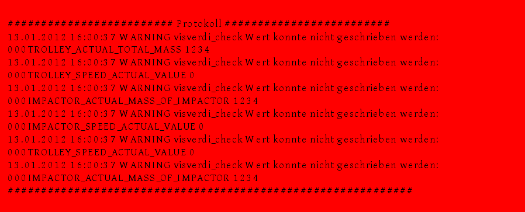
Diese E-Mail wurde automatisch generiert.
Liegen die Massendaten korrekt vor, aber die Metadaten fehlen oder sind fehlerhaft, müssen diese nachgebessert werden. [redacted-person] dafür entweder die fehlenden Daten in
VisVerdi nach oder korrigieren Sie die mme- sowie die .attribute-Datei und übertragen Sie diese erneut.
Sind die Massendaten fehlerhaft, erhalten der [redacted-co] Betreuer und der Versuchsverantwortliche des externen Partners folgende E-Mail-Benachrichtigung mit einem Protokoll im Anhang (Die hier angegebenen Werte sind beispielhaft und nicht relevant für [redacted-person]):
2. Rückmeldung : NOK mit Fehlermeldung im Anhang
----
[redacted-person]----Von: [redacted-email]20 [mailto:[redacted-email]] Gesendet: Wochentag, XX. Monat 20XX XX:XX Uhr
An: Mueller, Peter-Paul ([redacted-person])
Betreff: Import-Status: NOK Versuch: ABC123 Prozess:DWSINTIMPORT ID:'12345' (extern) Sehr geehrter [redacted-person],
Sie haben über den Engineering-[redacted-person] folgende Daten zu [redacted-co] übertragen:
StatusDatei/Auftragsnummer: ABC123 [redacted]ist: NOK
(OK=Lieferung erfolgreich, NOK/TIMEOUT=Fehler bei der Lieferung, siehe Protokoll unten.)
Ihr interner Ansprechpartner ist: [redacted-email]21
[redacted-person] Fragen zu dieser E-Mail, wenden Sie sich bitte an den [redacted-person] Support oder den verantwortlichen Ansprechpartner bei [redacted]dem Support bitte die folgenden Daten:
Prozess: DWSINTIMPORT
Prozessnummer: 12345
mailto:[redacted]
[redacted-person]: 123456
Informationen zum Engineering-Portal finden Sie unter der folgenden Adresse: https://engineering-portal.audi.web.vwg/
Diese E-Mail wurde automatisch generiert.
In diesem Fall werden die Daten vollständig gelöscht. Dies bedeutet für Sie: [redacted-person] dem Protokoll im Anhang, welche Daten fehlerhaft geliefert wurden, korrigieren Sie diese und stellen Sie sie erneut ein (Dies beinhaltet auch das Erstellen einer neuen mme- und .attribute-Datei).
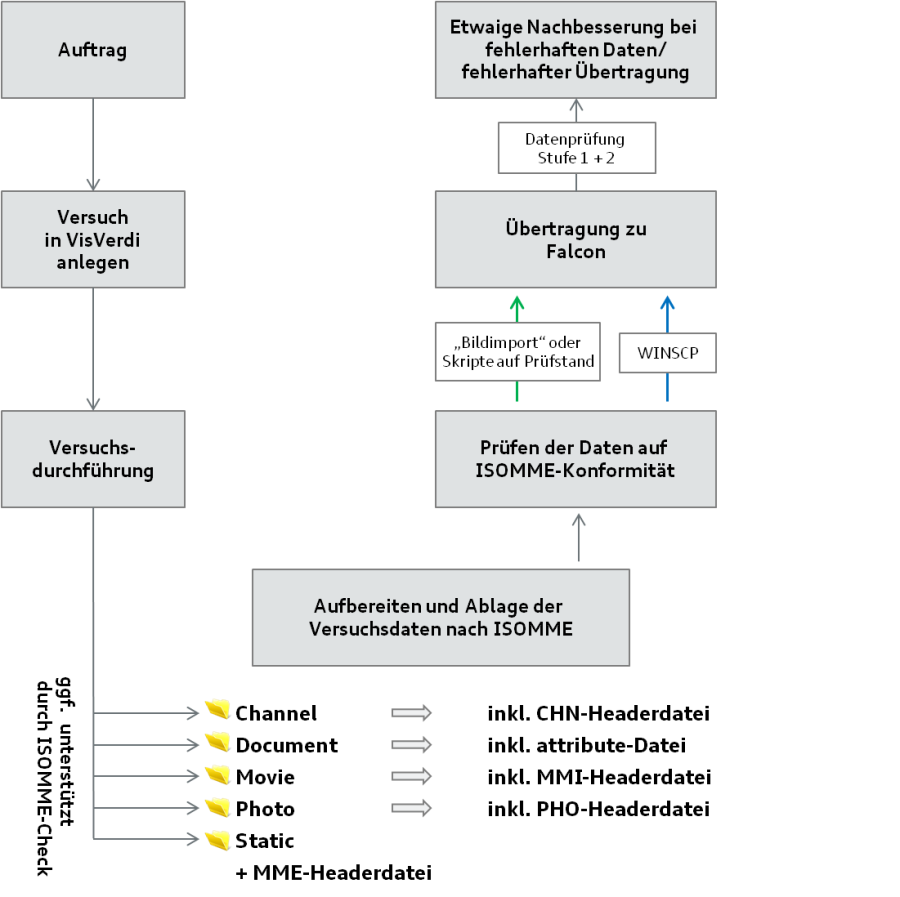
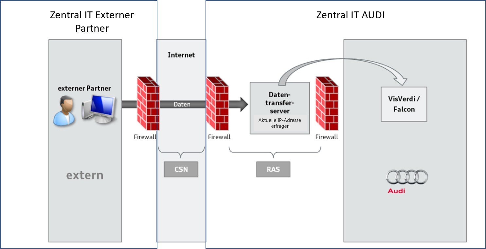
[redacted-person] zum Datentransferserver : SFTP-Server22
Alias : cat-datatransfer.ras.audi.vwg IP-Adresse : [redacted-phone].239
| Attribut_MME- Datei | Attribut_VisVerdi | ISO-Code_VisVerdi | Komponente_ VisVerdi | Sonstiges |
|---|---|---|---|---|
| Laboratory name | Name des Versuchslabors | 0.0.00.D.[redacted-person] _INFORMATION_LAB ORATORY_NAME |
[redacted-person] |
| Laboratory contact name | [redacted-person] | 0.0.00.D.[redacted-person] _INFORMATION_LAB ORATORY_CONTACT _NAME |
[redacted-person] | |
|---|---|---|---|---|
| Laboratory contact phone | - | - | - | wird aus den Stammdaten von "[redacted-person]" befüllt |
| Laboratory contact fax | - | - | - | wird aus den Stammdaten von "[redacted-person]" befüllt |
| Laboratory contact email | - | - | - | wird aus den Stammdaten von "[redacted-person]" befüllt |
| Laboratory test ref. Number | Versuchsnummer des Versuchslabors | 0.0.00.D.[redacted-person] _INFORMATION_LAB ORATORY_TEST_REF _NUMBER |
[redacted-person] | |
| Customer name | Firmenname des Versuchsauftragg ebers | 0.0.00.D.[redacted-person] _INFORMATION_CUS TOMER_NAME |
[redacted-person] | |
| Customer test ref. Number | Versuchsnummer | 0.0.00.D.[redacted-person] _INFORMATION_CUS TOMER_TEST_REF_N UMBER |
[redacted-person] | |
| Customer project ref. Number | Projekt | 0.0.00.D.[redacted-person] _INFORMATION_CUS TOMER_PROJECT_R EF_NUMBER |
[redacted-person] | |
| Customer order number | EA/FA/WA-Nr. | 0.0.00.D.[redacted-person] _INFORMATION_BUD GET_REF_NR |
[redacted-person] |
| Customer cost unit | Kostenstelle | 0.0.00.D.[redacted-person] _INFORMATION_COS T_CENTER |
[redacted-person] | |
|---|---|---|---|---|
| Customer test engineer name | Kontaktperson [redacted-co] | 0.0.00.D.[redacted-person] _INFORMATION_CUS TOMER_TEST_ENGIN EER_NAME |
[redacted-person] | |
| Customer test engineer phone | - | - | - | wird aus den Stammdaten von "Kontaktperson [redacted-co]" befüllt |
| Customer test engineer fax | - | - | - | wird aus den Stammdaten von "Kontaktperson [redacted-co]" befüllt |
| Customer test engineer email | - | - | - | wird aus den Stammdaten von "Kontaktperson [redacted-co]" befüllt |
| Title | Titel | 0.0.00.D.[redacted-person] _INFORMATION_TITL E |
[redacted-person] | |
| Medium No./ number of media | - | - | - | immer vorbefüllt mit dem Wert "1/1" |
| Timestamp | - | - | - | aktueller Zeitstempel der Erzeugung der MME-Datei |
| Type of the test | Versuchsart | 0.0.00.D.[redacted-person] _INFORMATION_TES T_MODE |
[redacted-person] |
| Subtype of the test | - | - | - | wird aus den Stammdaten der Versuchsunterart gezogen. Kann bei Versuch neu anlegen überprüft werden. |
|---|---|---|---|---|
| Regulation | Richtlinie | 0.0.00.D.[redacted-person] _INFORMATION_DIR ECTIVE |
[redacted-person] | |
| Reference temperature | Ist-Temperatur | 0.0.00.R.[redacted-person] _INFORMATION_REF ERENCE_TEMPERAT URE |
[redacted-person] | |
| Relative air humidity | relative Luftfeuchtigkeit | 0.0.00.R.[redacted-person] _INFORMATION_REL ATIVE_AIR_HUMIDIT Y |
[redacted-person] | |
| Date of the test | IST-Termin des Versuchs / Durchführungsdat um | 0.0.00.R.[redacted-person] _INFORMATION_DAT E_OF_TEST_ACTUAL _VALUE |
[redacted-person] | |
| Number of test objects | - | - | - | Anzahl der Testobjekte im Versuch, Normalerweise 2 es gibt aber auch ein paar Versuche mit 3 |
| Name of test object 1 | - | - | - | Name des ersten Versuchsobjektes welches in den Stammdaten der Versuchsunterart konfiguriert ist |
| Velocity test object 1 | Istgeschwindigkeit | <Kürzel_Versuchsobj ekt>.0.00.R.O.<Versu chsobjekt>_SPEED_A CTUAL_VALUE | Versuchsobje kt | ISO-Code "1.0.00.R.[redacted-person]_S PEED_ACTUAL_VALUE " bei Versuchsobjekt "Fahrzeug" |
| Mass test object 1 | [redacted-person] | <Kürzel_Versuchsobj ekt>.0.00.R.O.<Versu chsobjekt>_ACTUAL_ TOTAL_MASS | Versuchsobje kt | ISO-Code "1.0.00.R.[redacted-person]_A CTUAL_TOTAL_MASS" bei Versuchsobjekt "Fahrzeug" |
|---|---|---|---|---|
| Driver position object 1 | Linkslenker/ Rechtslenker | <Kürzel_Versuchsobj ekt>.0.00.D.O.<Versu chsobjekt>_LEFT_RI GHT_HAND_DRIVE | Versuchsobje kt | ISO-Code "1.0.00.D.[redacted-person]_L EFT_RIGHT_HAND_DRI VE" bei Versuchsobjekt "Fahrzeug" |
| Impact side test object 1 | Belastungsseite | <Kürzel_Versuchsobj ekt>.0.00.D.O.<Versu chsobjekt>_SIDE_OF_ IMPACT | Versuchsobje kt | ISO-Code "1.0.00.D.[redacted-person]_S IDE_OF_IMPACT" bei Versuchsobjekt "Fahrzeug" |
| Type of test object 1 | - | - | - | ISO-Kürzel des ersten Versuchsobjektes welches in den Stammdaten für Versuchsobjekte konfiguriert ist |
| Class of test object 1 | - | - | - | keine Verwendung bei [redacted-co], Defaultwert immer NOVALUE |
| Code of test object 1 | - | - | - | keine Verwendung bei [redacted-co], Defaultwert immer NOVALUE |
| Ref. number of test object 1 | FzgSi Schlüsselnummer | <Kürzel_Versuchsobj ekt>.0.00.D.O.<Versu chsobjekt>_IEK5_VE HICLE_IDENTIFIER | Versuchsobje kt | ISO-Code "1.0.00.D.[redacted-person]_I EK5_VEHICLE_IDENTIF IER" bei Versuchsobjekt "Fahrzeug" |
| Name of test object 2 | - | - | - | Name des zweiten Versuchsobjektes welches in den Stammdaten der Versuchsunterart konfiguriert ist |
| Velocity test object 2 | Istgeschwindigkeit | <Kürzel_Versuchsobj ekt>.0.00.R.O.<Versu chsobjekt>_SPEED_A CTUAL_VALUE | Versuchsobje kt | ISO-Code "1.0.00.R.[redacted-person]_S PEED_ACTUAL_VALUE " bei Versuchsobjekt "Fahrzeug" |
|---|---|---|---|---|
| Mass test object 2 | [redacted-person] | <Kürzel_Versuchsobj ekt>.0.00.R.O.<Versu chsobjekt>_ACTUAL_ TOTAL_MASS | Versuchsobje kt | ISO-Code "1.0.00.R.[redacted-person]_A CTUAL_TOTAL_MASS" bei Versuchsobjekt "Fahrzeug" |
| Driver position object 2 | Linkslenker/ Rechtslenker | <Kürzel_Versuchsobj ekt>.0.00.D.O.<Versu chsobjekt>_LEFT_RI GHT_HAND_DRIVE | Versuchsobje kt | ISO-Code "1.0.00.D.[redacted-person]_L EFT_RIGHT_HAND_DRI VE" bei Versuchsobjekt "Fahrzeug" |
| Impact side test object 2 | Belastungsseite | <Kürzel_Versuchsobj ekt>.0.00.D.O.<Versu chsobjekt>_SIDE_OF_ IMPACT | Versuchsobje kt | ISO-Code "1.0.00.D.[redacted-person]_S IDE_OF_IMPACT" bei Versuchsobjekt "Fahrzeug" |
| Type of test object 2 | - | - | - | ISO-Kürzel des zweiten Versuchsobjektes welches in den Stammdaten für Versuchsobjekte konfiguriert ist |
| Class of test object 2 | - | - | - | keine Verwendung bei [redacted-co], Defaultwert immer NOVALUE |
| Code of test object 2 | - | - | - | keine Verwendung bei [redacted-co], Defaultwert immer NOVALUE |
| Ref. number of test object 2 | FzgSi Schlüsselnummer | <Kürzel_Versuchsobj ekt>.0.00.D.O.<Versu chsobjekt>_IEK5_VE HICLE_IDENTIFIER | Versuchsobje kt | ISO-Code "1.0.00.D.[redacted-person]_I EK5_VEHICLE_IDENTIF IER" bei Versuchsobjekt "Fahrzeug" |